LE Host
本文综述 Bluetooth LE Host 接口，其中包括基于 GAP 的接口和基于 GATT 的接口。
SDK 中 LE Host 和 Profile 的架构如下：

软件架构图
术语和概念
在蓝牙核心规范中， Profile 的定义不同于 Protocol 的定义。Protocol 被定义为各层协议，例如 Link Layer、L2CAP 、 SMP 和 ATT。不同于 Protocol，Profile 从使用蓝牙核心规范中各层协议的角度，定义蓝牙应用互操作性的实现。Profile 定义 Protocol 中的可用特性和功能，以及蓝牙设备互操作性的实现，使 Bluetooth Host 适用于各种场景的应用开发。
在蓝牙核心规范中，Profile 和 Protocol 的关联如图-蓝牙 Profile 所示。

蓝牙 Profile
Profile 由红色矩形框表示，包括 GAP 、 Profile #1 、 Profile #2 、 Profile #3。蓝牙核心规范中的 Profile 分为两种类型：基于 GAP 的 Profile（ GAP ）和基于 GATT 的 Profile（ Profile #1 、 Profile #2 、 Profile #3 ）。
GAP
GAP 是所有的蓝牙设备均需实现的 Profile，用于描述 device discovery、connection、security requirement 和 authentication 的行为和方法。GAP 中的 LE 部分定义四种角色 (Broadcaster、Observer、Peripheral 和 Central)。一个设备可以同时支持多种 LE GAP 角色。
Broadcaster 角色用于只通过广播发送数据的应用。
Observer 角色用于通过扫描接收数据的应用。
Peripheral 角色用于通过广播发送数据并且可以建立链路的应用。
Central 角色用于通过扫描接收数据并且建立一条或多条链路的应用。
GAP 的位置
GAP 层作为蓝牙协议层的组成模块，如下图所示，中间浅蓝框框内的部分（ GAP 、 Bluetooth Host 、 Bluetooth Controller ）为蓝牙协议层。 Application 在蓝牙协议层之上， baseband/RF 位于蓝牙协议层之下。 GAP 层给 application 提供访问 Bluetooth Host 的接口。application 可以使用 GAP 来控制 Bluetooth Host 启动某些操作，例如认证、创建连接等。 Bluetooth Host 可以使用 GAP 来通知 application 蓝牙状态的变化，例如监督超时、远程断开连接等。
{kind=link}
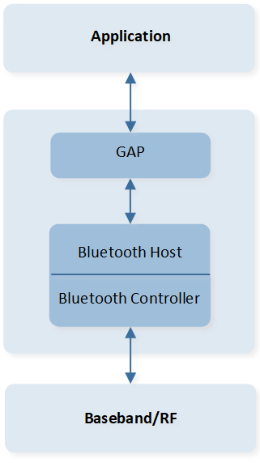
GAP 在 SDK 中的位置
基于 GATT 的 Profile
在蓝牙核心规范中，另一种常用的 Profile 是基于 GATT 的 Profile。GATT 分为 server 和 client 两种角色。 server 用于提供 service 数据。client 可以访问 service 数据。基于 GATT 的 Profile 是基于 server-client 交互结构，适用于不同应用场景，用于蓝牙设备之间的特定数据交互。如图-基于 GATT 的 Profile 层级结构 所示，Profile 是以 Service 和 Characteristic 的形式组成的。
{kind=link}
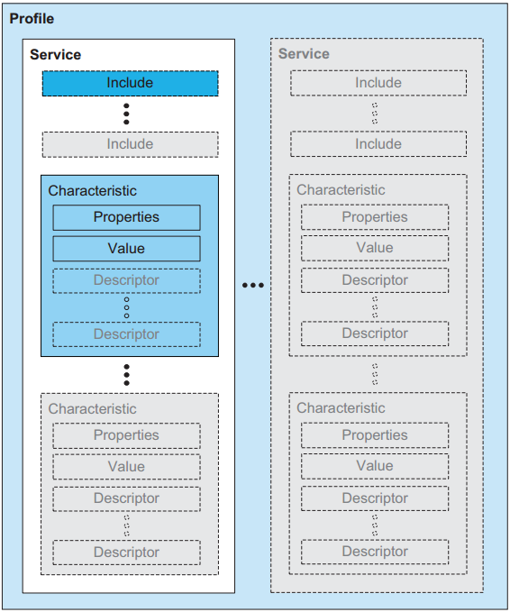
基于 GATT 的 Profile 层级结构
功能设置
支持的蓝牙技术功能
GAP 的功能
GAP 层提供的接口的功能如下：
Advertising: 设置 advertising 参数，启动/停止 advertising。
Scan: 设置 scan 参数，启动/停止 scan。
Connection: 设置 connection 参数，创建 connection，终止已建立的 connection，更新 connection 参数。
配对: 设置配对参数，启动配对，使用 passkey entry 方式时输入/显示 passkey。
密钥管理: 根据设备地址和地址类型查找 key entry，保存/加载绑定信息的密钥，解析 random address，删除绑定设备密钥。
其它:
设置 GAP 公共参数。
修改本地 Filter Accept List。
生成/设置本地设备 random address。
配置本地设备 identity address。
...
提供的 API
Bluetooth Host API 可以分为 GAP API 和 GATT API 两类。下图展示了 Applications，GAP/GATT 以及蓝牙协议栈三者间的关系。横线上方的部分由 APP 开发，横线下方的区域由 Realtek 开发。
{kind=link}
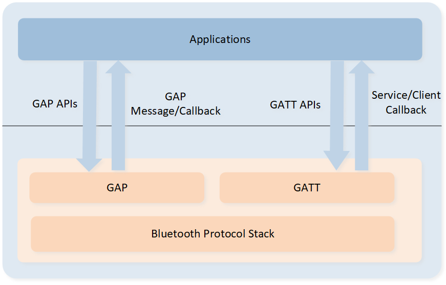
GATT GAP APIs 结构
本章简单介绍 GAP/GATT APIs。对于 RTL87x2G，GAP/GATT 相关 API 的头文件位于: subsys\bluetooth\，对于其他 IC（RTL87x2C/RTL87x2D/RTL87x2E/RTL87x2H），头文件目录为 inc\bluetooth。
下表简单介绍了 GAP APIs。对于 RTL87x2G，GAP 相关 API 的头文件位于 subsys\bluetooth\bt_host\inc，对于其他 IC（RTL87x2C/RTL87x2D/RTL87x2E/RTL87x2H），头文件目录为 inc\bluetooth\gap。
有关 GAP/GATT APIs 的详细解释，请参考 Bluetooth Host。
Header file |
Description |
API Reference |
|---|---|---|
|
Start/Stop legacy advertisement etc. |
|
|
Start/Stop extended advertisement etc. |
|
|
Start/Stop periodic advertisement etc. |
|
|
Start/Stop legacy scan etc. |
|
|
Start/Stop extended scan etc. |
|
|
Set/Get connection parameters, disconnect LE link etc. |
|
|
Save/Load LE key etc. |
|
|
Set/Get bond parameters, display/input bond keys etc. |
|
|
Definite GAP bond manager module APIs. |
|
|
Start/Stop DTM receiver/transmitter test. |
|
|
Register callback, read antenna information etc. |
|
|
Start/Stop constant tone extension request procedure etc. |
|
|
Enable/Disable capturing IQ samples etc. |
|
|
Enable/Disable constant tone extensions in periodic advertising. |
|
|
Definite GAP callback messages. |
|
|
Definite GAP messages. |
|
|
Set/Get privacy parameters, enable/disable privacy etc. |
|
|
GAP LE credit based connection exported functions. |
|
|
GAP enhanced credit based flow control mode exported functions. |
|
|
Set/Get GAP general parameters. |
|
|
Initialize/Set/Get LE parameters of GAP etc. |
|
|
Definite types of device appearance, advertising data type, PHY etc. |
下表简单介绍了 GATT APIs。对于 RTL87x2G，GATT 相关 API 的头文件位于 subsys\bluetooth\gatt_profile，对于其他 IC（RTL87x2C/RTL87x2D/RTL87x2E/RTL87x2H），头文件目录为 inc\bluetooth\profile。
Header file |
Description |
API Reference |
|---|---|---|
|
Register client callback with conn ID, send read/write request etc. |
|
|
Initialize client parameters, definite discovery procedure etc. |
|
|
Register client callback with conn handle, send read/write request etc. |
|
|
Register server callback with conn ID, send indication/notification etc. |
|
|
Initialize server parameters, register builtin service etc. |
|
|
Register server callback with conn handle, send indication/notification etc. |
初始化和配置
配置
开发者可以通过 MP Tool 配置以下项目：
Configurable Item |
Description |
Value |
|---|---|---|
LE Master Link Num |
LE Central link number. |
≥ APP_MAX_LINKS |
LE Slave Link Num |
LE Peripheral link number. |
≥ APP_MAX_LINKS |
LE bond device number |
LE maximum bonded device number. |
Developers can configure according to actual needs. |
CCCD count |
Maximum CCCD number. |
Developers can configure according to actual needs. |
备注
APP_MAX_LINKS 是由 APP 配置的 link 数目。
更多有关于 MP Tool 配置的信息请参考 快速入门 中的 生成 System Config File。
初始化
本节介绍如何在 app_le_gap_init() 中配置 LE GAP 参数以及 GAP 内部启动流程。
GAP 启动流程
Initialize GAP in
mainint main(void) { ...... le_gap_init(APP_MAX_LINKS); gap_lib_init(); app_le_gap_init(); app_le_profile_init(); ...... }
le_gap_init(): 初始化 GAP 并设置 link 数目。gap_lib_init(): 初始化gap_utils.lib。app_le_gap_init: GAP 参数的初始化。app_le_profile_init: 初始化基于 GATT 的 Profiles。
在 APP task 中启动 Bluetooth Host
void app_main_task(void *p_param) { uint8_t event; os_msg_queue_create(&io_queue_handle, "ioQ", MAX_NUMBER_OF_IO_MESSAGE, sizeof(T_IO_MSG)); os_msg_queue_create(&evt_queue_handle, "evtQ", MAX_NUMBER_OF_EVENT_MESSAGE, sizeof(uint8_t)); gap_start_bt_stack(evt_queue_handle, io_queue_handle, MAX_NUMBER_OF_GAP_MESSAGE); ...... }
APP 需要调用
gap_start_bt_stack()来启动 Bluetooth Host 和 GAP 初始化流程。GAP 内部初始化流程

GAP 内部初始化流程
流程图说明
gap_start_bt_stack(): 通过发送注册请求启动 Bluetooth Host 初始化流程。Receive act info: Bluetooth Host 用来通知 stack 已准备就绪。
Set pair mode: 必要步骤。设置参数
GAP_PARAM_BOND_PAIRING_MODE，GAP_PARAM_BOND_AUTHEN_REQUIREMENTS_FLAGS，GAP_PARAM_BOND_IO_CAPABILITIES和GAP_PARAM_BOND_OOB_ENABLED。Set local IRK: 必要步骤。设置本地设备的 IRK，若
GAP_PARAM_BOND_GEN_LOCAL_IRK_AUTO为 true，则 GAP 层将使用自动生成的 IRK，并将其存入 flash，否则，GAP 层将使用通过GAP_PARAM_BOND_SET_LOCAL_IRK设置的值，默认值为全零。Set privacy timeout: 可选步骤。若 APP 调用
le_privacy_set_param()设置GAP_PARAM_PRIVACY_TIMEOUT，则在初始化流程中 GAP 层将设置 Resolvable Private Address Timeout。Set extended advertising mode: 可选步骤。若 APP 调用
le_set_gap_param()设置GAP_PARAM_USE_EXTENDED_ADV，则在初始化流程中 GAP 层将设置LE Advertising Extensions模式。Set random address: 可选步骤。若 APP 调用
le_set_gap_param()设置GAP_PARAM_RANDOM_ADDR，则在初始化流程中 GAP 层将设置 random address。Set fixed passkey: 可选步骤。设置
GAP_PARAM_BOND_FIXED_PASSKEY和GAP_PARAM_BOND_FIXED_PASSKEY_ENABLE的值。Set default physical: 可选步骤。若 APP 调用
le_set_gap_param()设置GAP_PARAM_DEFAULT_PHYS_PREFER，GAP_PARAM_DEFAULT_TX_PHYS_PREFER或GAP_PARAM_DEFAULT_RX_PHYS_PREFER, 则在初始化流程中 GAP 将设置默认 physical。Register GATT services: 必要步骤。注册基于 GATT 的 services。
Send
GAP_INIT_STATE_STACK_READYto APP: GAP 初始化流程已完成。
GAP 参数的初始化
以 Bluetooth sample 工程为例，可以通过修改 app_le_gap_init() 函数的代码，在 main.c 中实现 GAP 参数的初始化。
Device Name 和 Device Appearance 的配置
在 gap_le.h 的 T_GAP_LE_PARAM_TYPE 中定义参数类型。
Device Name 的配置
Device Name 的配置用于设置该设备 GAP Service 中 Device Name Characteristic 的值。若在 Advertising 数据中设置 Device Name，那么 Advertising 数据中的 Device Name 需要与 GAP Service 的 Device Name Characteristic 的值相同，否则会出现互操作性问题。
/** @brief GAP - Advertisement data (max size = 31 bytes, best kept short to conserve power) */
static const uint8_t adv_data[] =
{
/* Flags */
0x02, /* length */
GAP_ADTYPE_FLAGS, /* type="Flags" */
GAP_ADTYPE_FLAGS_LIMITED | GAP_ADTYPE_FLAGS_BREDR_NOT_SUPPORTED,
/* Service */
0x03, /* length */
GAP_ADTYPE_16BIT_COMPLETE,
LO_WORD(GATT_UUID_SIMPLE_PROFILE),
HI_WORD(GATT_UUID_SIMPLE_PROFILE),
/* Local name */
0x0F, /* length */
GAP_ADTYPE_LOCAL_NAME_COMPLETE,
'B', 'L', 'E', '_', 'P', 'E', 'R', 'I', 'P', 'H', 'E', 'R', 'A', 'L',
};
void app_le_gap_init(void)
{
/* Device name and device appearance */
uint8_t device_name[GAP_DEVICE_NAME_LEN] = "BLE_PERIPHERAL";
......
/* Set device name and device appearance */
le_set_gap_param(GAP_PARAM_DEVICE_NAME, GAP_DEVICE_NAME_LEN, device_name);
......
}
Bluetooth Host 目前支持的 Device Name 字符串的最大长度是 40 字节（包括结束符）。如果 device name 字符串超过 40 字节，则会出现字符串被截断的情况。
#define GAP_DEVICE_NAME_LEN (39+1) //!< Max length of device name, if device name length exceeds it, it will be truncated.
Device Appearance 的配置
Device Appearance 的配置用于设置该设备 GAP Service 中 Device Appearance Characteristic 的值。若在 Advertising 数据中设置 Device Appearance，那么 Advertising 数据中的 Device Appearance 需要与 GAP Service 的 Device Appearance Characteristic 的值相同，否则会出现互操作性问题。
Device Appearance 用于描述设备的类型，例如键盘、鼠标、温度计、血压计等。在 gap_le_types.h 中定义可以使用的数值。
/** @defgroup GAP_LE_APPEARANCE_VALUES GAP Appearance Values
* @{
*/
#define GAP_GATT_APPEARANCE_UNKNOWN 0
#define GAP_GATT_APPEARANCE_GENERIC_PHONE 64
#define GAP_GATT_APPEARANCE_GENERIC_COMPUTER 128
#define GAP_GATT_APPEARANCE_GENERIC_WATCH 192
#define GAP_GATT_APPEARANCE_WATCH_SPORTS_WATCH 193
示例代码如下:
/** @brief GAP - scan response data (max size = 31 bytes) */
static const uint8_t scan_rsp_data[] =
{
0x03, /* length */
GAP_ADTYPE_APPEARANCE, /* type="Appearance" */
LO_WORD(GAP_GATT_APPEARANCE_UNKNOWN),
HI_WORD(GAP_GATT_APPEARANCE_UNKNOWN),
};
void app_le_gap_init(void)
{
/* Device name and device appearance */
uint16_t appearance = GAP_GATT_APPEARANCE_UNKNOWN;
......
/* Set device name and device appearance */
le_set_gap_param(GAP_PARAM_APPEARANCE, sizeof(appearance), &appearance);
......
}
Advertising 参数的配置
在 gap_adv.h 的 T_LE_ADV_PARAM_TYPE 中定义 advertising 参数类型，用户可以配置的 advertising 参数如下：
void app_le_gap_init(void)
{
/* Advertising parameters */
uint8_t adv_evt_type = GAP_ADTYPE_ADV_IND;
uint8_t adv_direct_type = GAP_REMOTE_ADDR_LE_PUBLIC;
uint8_t adv_direct_addr[GAP_BD_ADDR_LEN] = {0};
uint8_t adv_chann_map = GAP_ADVCHAN_ALL;
uint8_t adv_filter_policy = GAP_ADV_FILTER_ANY;
uint16_t adv_int_min = DEFAULT_ADVERTISING_INTERVAL_MIN;
uint16_t adv_int_max = DEFAULT_ADVERTISING_INTERVAL_MAX;
......
/* Set advertising parameters */
le_adv_set_param(GAP_PARAM_ADV_EVENT_TYPE, sizeof(adv_evt_type), &adv_evt_type);
le_adv_set_param(GAP_PARAM_ADV_DIRECT_ADDR_TYPE, sizeof(adv_direct_type), &adv_direct_type);
le_adv_set_param(GAP_PARAM_ADV_DIRECT_ADDR, sizeof(adv_direct_addr), adv_direct_addr);
le_adv_set_param(GAP_PARAM_ADV_CHANNEL_MAP, sizeof(adv_chann_map), &adv_chann_map);
le_adv_set_param(GAP_PARAM_ADV_FILTER_POLICY, sizeof(adv_filter_policy), &adv_filter_policy);
le_adv_set_param(GAP_PARAM_ADV_INTERVAL_MIN, sizeof(adv_int_min), &adv_int_min);
le_adv_set_param(GAP_PARAM_ADV_INTERVAL_MAX, sizeof(adv_int_max), &adv_int_max);
le_adv_set_param(GAP_PARAM_ADV_DATA, sizeof(adv_data), (void *)adv_data);
le_adv_set_param(GAP_PARAM_SCAN_RSP_DATA, sizeof(scan_rsp_data), (void *)scan_rsp_data);
}
adv_evt_type 表示 advertising 类型，不同类型的 advertising 需要不同的参数，具体如 Advertising 参数设置 所示。
|
|||||
|---|---|---|---|---|---|
|
Y |
Ignore |
Y |
Y |
Y |
|
Y |
Ignore |
Y |
Y |
Y |
|
Ignore |
Y |
Ignore |
Ignore |
Y |
|
Ignore |
Y |
Ignore |
Ignore |
Y |
|
Y |
Y |
Y |
Y |
Y |
|
Y |
Ignore |
Y |
Y |
Ignore |
Allow Establish Link |
Y |
Y |
N |
N |
Y |
Scan 参数的配置
在 gap_scan.h 的 T_LE_SCAN_PARAM_TYPE 中定义 scan 参数类型。
用户可以配置的 Scan 参数如下：
void app_le_gap_init(void)
{
/* Scan parameters */
uint8_t scan_mode = GAP_SCAN_MODE_ACTIVE;
uint16_t scan_interval = DEFAULT_SCAN_INTERVAL;
uint16_t scan_window = DEFAULT_SCAN_WINDOW;
uint8_t scan_filter_policy = GAP_SCAN_FILTER_ANY;
uint8_t scan_filter_duplicate = GAP_SCAN_FILTER_DUPLICATE_ENABLE;
/* Set scan parameters */
le_scan_set_param(GAP_PARAM_SCAN_MODE, sizeof(scan_mode), &scan_mode);
le_scan_set_param(GAP_PARAM_SCAN_INTERVAL, sizeof(scan_interval), &scan_interval);
le_scan_set_param(GAP_PARAM_SCAN_WINDOW, sizeof(scan_window), &scan_window);
le_scan_set_param(GAP_PARAM_SCAN_FILTER_POLICY, sizeof(scan_filter_policy),
&scan_filter_policy);
le_scan_set_param(GAP_PARAM_SCAN_FILTER_DUPLICATES, sizeof(scan_filter_duplicate),
&scan_filter_duplicate);
}
参数说明：
scan_mode:T_GAP_SCAN_MODE。scan_interval: scan interval 的取值范围为 0x0004~0x4000 (单位为 625us)。scan_window: scan window 的取值范围为 0x0004~0x4000 (单位为 625us)。scan_filter_policy:T_GAP_SCAN_FILTER_POLICY。scan_filter_duplicate:T_GAP_SCAN_FILTER_DUPLICATE，该参数用于决定是否过滤重复的 Advertising 数据，当scan_filter_policy参数为GAP_SCAN_FILTER_DUPLICATE_ENABLE时，将在协议栈中过滤重复的 Advertising 数据，且不会通知 APP。
Bond Manager 参数的配置
在 gap.h 的 T_GAP_PARAM_TYPE 中和 gap_bond_le.h 的 T_LE_BOND_PARAM_TYPE 中定义参数类型。用户可以配置的 bond manager 参数如下：
void app_le_gap_init(void)
{
/* GAP Bond Manager parameters */
uint8_t auth_pair_mode = GAP_PAIRING_MODE_PAIRABLE;
uint16_t auth_flags = GAP_AUTHEN_BIT_BONDING_FLAG;
uint8_t auth_io_cap = GAP_IO_CAP_NO_INPUT_NO_OUTPUT;
uint8_t auth_oob = false;
uint8_t auth_use_fix_passkey = false;
uint32_t auth_fix_passkey = 0;
uint16_t auth_sec_req_flags = GAP_AUTHEN_BIT_BONDING_FLAG;
......
/* Setup the GAP Bond Manager */
gap_set_param(GAP_PARAM_BOND_PAIRING_MODE, sizeof(auth_pair_mode), &auth_pair_mode);
gap_set_param(GAP_PARAM_BOND_AUTHEN_REQUIREMENTS_FLAGS, sizeof(auth_flags), &auth_flags);
gap_set_param(GAP_PARAM_BOND_IO_CAPABILITIES, sizeof(auth_io_cap), &auth_io_cap);
gap_set_param(GAP_PARAM_BOND_OOB_ENABLED, sizeof(auth_oob), &auth_oob);
le_bond_set_param(GAP_PARAM_BOND_FIXED_PASSKEY, sizeof(auth_fix_passkey), &auth_fix_passkey);
le_bond_set_param(GAP_PARAM_BOND_FIXED_PASSKEY_ENABLE, sizeof(auth_use_fix_passkey),
&auth_use_fix_passkey);
le_bond_set_param(GAP_PARAM_BOND_SEC_REQ_REQUIREMENT, sizeof(auth_sec_req_flags),
&auth_sec_req_flags);
}
参数说明：
auth_pair_mode: 决定设备是否处于可配对模式：GAP_PAIRING_MODE_PAIRABLE: 设备处于可配对模式。GAP_PAIRING_MODE_NO_PAIRING: 设备处于不可配对模式。
auth_flags: 表示要求的 security 属性的位域：auth_io_cap:T_GAP_IO_CAP，表示设备的输入输出能力。auth_oob: 表示是否使能 OOB：true: 设置 OOB 标志位。false: 未设置 OOB 标志位。
auth_use_fix_passkey: 表示当配对方法为 passkey entry 且本地设备需要生成 passkey 时，是使用随机生成的 passkey 还是固定的 passkey：true: 使用固定的 passkey。false: 使用随机生成的 passkey。
auth_fix_passkey: 配对时使用的固定 passkey 的值，当auth_use_fix_passkey参数为 true 时auth_fix_passkey参数是有效的。auth_sec_req_enable: 决定在建立 connection 之后，是否发起配对流程。auth_sec_req_flags: 表示要求的 security 属性的位域。
LE Advertising Extensions 参数的配置
本节内容仅适用于使用 LE Advertising Extensions 的设备。
首先，设备需要配置 GAP_PARAM_USE_EXTENDED_ADV 以使用 LE Advertising Extensions。
然后，根据设备使用的 GAP 角色配置 extended advertising 相关参数或 extended scan 相关参数。具体信息参见 LE Peripheral Extended ADV 和 LE Central Extended Scan。
配置 GAP_PARAM_USE_EXTENDED_ADV
为使用 LE Advertising Extensions，APP 必须配置 GAP_PARAM_USE_EXTENDED_ADV 为 true。
void app_le_gap_init(void)
{
/* LE Advertising Extensions parameters */
bool use_extended = true;
......
/* Use LE Advertising Extensions */
le_set_gap_param(GAP_PARAM_USE_EXTENDED_ADV, sizeof(use_extended), &use_extended);
......
}
Extended Advertising 相关参数的配置
适用于 Peripheral 角色或 Broadcaster 角色。
开发者可调用 LE Peripheral Extended ADV 工程中示例的 le_init_ext_adv_params_ext_conn() 或 le_init_ext_adv_params_ext_conn_directed() 接口来设置 GAP 参数，初始化可连接非定向广播或可连接定向广播的参数。
上述 API 一经调用，首先 le_ext_adv_create_adv_handle() 会被调用来创建 advertising handle 以识别 advertising set。然后针对该 advertising set，通过 le_ext_adv_set_adv_param() 和 le_ext_adv_set_adv_data() 设置 GAP extended advertising 参数和 advertising 数据，示例代码如下：
void app_le_gap_init(void)
{
......
/* Initialize extended advertising related parameters */
le_init_ext_adv_params_ext_conn();
......
}
在 gap_ext_adv.h 中提供关于 extended advertising 的 APIs，更多信息参见 gap_ext_adv.h。 adv_event_prop 定义 advertising 的 properties，不同 adv_event_prop 的 advertising 需要不同的参数。
根据使用的 advertising PDUs，advertising event properties 可分为两类：使用 legacy advertising PDUs 的 advertising event properties 和 extended advertising PDUs 的 advertising event properties。
使用 legacy advertising PDUs 的 advertising event properties 如下表所示。若使用 legacy advertising PDUs ，advertising 数据或 scan response 数据不能超过 31 字节。
|
|||||
|---|---|---|---|---|---|
|
Y |
Y |
Y |
Y |
Y |
|
Y |
Ignore |
Y |
Y |
Y |
|
Y |
Ignore |
Y |
Y |
Y |
|
Y |
Y |
Y |
Y |
Y |
|
Ignore |
Y |
Ignore |
Ignore |
Y |
|
Ignore |
Y |
Ignore |
Ignore |
Y |
|
Y |
Ignore |
Y |
Y |
Ignore |
|
LE 1M PHY |
LE 1M PHY |
LE 1M PHY |
LE 1M PHY |
LE 1M PHY |
|
Ignore |
Ignore |
Ignore |
Ignore |
Ignore |
Allow Establish Link |
Y |
Y |
N |
N |
Y |
Advertising data |
Y |
N |
Y |
Y |
N |
Scan response data |
Y |
N |
Y |
N |
N |
使用 extended advertising PDUs 的 advertising event properties 如下表所示。
在 bt5_peripheral_stack_api.h 和 bt5_peripheral_stack_api.c 中提供关于使用 extended advertising PDUs 的 extended advertising 参数设置的示例代码。
|
||||||
|---|---|---|---|---|---|---|
|
Y |
Y |
Y |
Y |
Y |
Y |
|
Y |
Y |
Y |
Y |
Y |
Y |
|
Y |
Y |
Y |
Y |
Y |
Y |
|
Y |
Y |
Y |
Y |
Y |
Y |
|
Ignore |
Y |
Ignore |
Y |
Ignore |
Y |
|
Ignore |
Y |
Ignore |
Y |
Ignore |
Y |
|
Y |
Ignore |
Y |
Ignore |
Y |
Ignore |
|
LE 1M PHY LE Coded PHY |
LE 1M PHY LE Coded PHY |
LE 1M PHY LE Coded PHY |
LE 1M PHY LE Coded PHY |
LE 1M PHY LE Coded PHY |
LE 1M PHY LE Coded PHY |
|
LE 1M PHY LE 2M PHY LE Coded PHY |
LE 1M PHY LE 2M PHY LE Coded PHY |
LE 1M PHY LE 2M PHY LE Coded PHY |
LE 1M PHY LE 2M PHY LE Coded PHY |
LE 1M PHY LE 2M PHY LE Coded PHY |
LE 1M PHY LE 2M PHY LE Coded PHY |
Allow Establish Link |
N |
N |
Y |
Y |
N |
N |
Advertising data |
Y |
Y |
Y |
Y |
N |
N |
Scan response data |
N |
N |
N |
N |
Y |
Y |
Extended Scan 相关参数的配置
适用于 Central 角色或 Observer 角色。
备注
要使用 extended scan，必须将 GAP_PARAM_USE_EXTENDED_ADV 配置成 true。
开发者可以调用 le_ext_scan_set_param() 来初始化 extended scan 参数，调用 le_ext_scan_set_phy_param() 来初始化 extended scan PHY 参数。之后，可以调用 le_ext_scan_start() 开启 extended scanning。
示例代码如下:
void app_le_gap_init(void)
{
......
/* Use LE Advertising Extensions */
le_set_gap_param(GAP_PARAM_USE_EXTENDED_ADV, sizeof(use_extended), &use_extended);
/* Register gap message callback */
le_register_app_cb(app_gap_callback);
}
static T_USER_CMD_PARSE_RESULT cmd_escan(T_USER_CMD_PARSED_VALUE *p_parse_value)
{
T_GAP_CAUSE cause;
T_GAP_LOCAL_ADDR_TYPE own_address_type = GAP_LOCAL_ADDR_LE_PUBLIC;
T_GAP_SCAN_FILTER_POLICY ext_scan_filter_policy = GAP_SCAN_FILTER_ANY;
T_GAP_SCAN_FILTER_DUPLICATE ext_scan_filter_duplicate = GAP_SCAN_FILTER_DUPLICATE_ENABLE;
uint16_t ext_scan_duration;
uint16_t ext_scan_period;
uint8_t scan_phys = GAP_EXT_SCAN_PHYS_1M_BIT | GAP_EXT_SCAN_PHYS_CODED_BIT;
T_EXT_SCAN_MODE scan_mode = (T_EXT_SCAN_MODE)p_parse_value->dw_param[0];
link_mgr_clear_device_list();
if (scan_mode == SCAN_UNTIL_DISABLED)
{
// If Duration parameter is zero, continue scanning until scanning is disabled.
ext_scan_duration = 0;
ext_scan_period = 0;
}
else if (scan_mode == PERIOD_SCAN_UNTIL_DISABLED)
{
// If Duration and Period parameters are non-zero, scan for the duration within a scan period,
// and scan periods continue until scanning is disabled. Duration shall be less than Period.
ext_scan_duration = 500;
ext_scan_period = 8;
ext_scan_filter_duplicate = GAP_SCAN_FILTER_DUPLICATE_ENABLED_RESET_FOR_EACH_PERIOD;
}
else if (scan_mode == SCAN_UNTIL_DURATION_EXPIRED)
{
// If Duration parameter is non-zero and Period parameter is zero, continue scanning until duration has expired.
ext_scan_duration = 500;
ext_scan_period = 0;
}
if (p_parse_value->param_count > 1)
{
scan_phys = p_parse_value->dw_param[1];
}
le_ext_scan_set_param(GAP_PARAM_EXT_SCAN_LOCAL_ADDR_TYPE, sizeof(own_address_type), &own_address_type);
le_ext_scan_set_param(GAP_PARAM_EXT_SCAN_PHYS, sizeof(scan_phys), &scan_phys);
le_ext_scan_set_param(GAP_PARAM_EXT_SCAN_DURATION, sizeof(ext_scan_duration), &ext_scan_duration);
le_ext_scan_set_param(GAP_PARAM_EXT_SCAN_PERIOD, sizeof(ext_scan_period),&ext_scan_period);
le_ext_scan_set_param(GAP_PARAM_EXT_SCAN_FILTER_POLICY, sizeof(ext_scan_filter_policy), &ext_scan_filter_policy);
le_ext_scan_set_param(GAP_PARAM_EXT_SCAN_FILTER_DUPLICATES, sizeof(ext_scan_filter_duplicate), &ext_scan_filter_duplicate);
cause = le_ext_scan_start();
return (T_USER_CMD_PARSE_RESULT)cause;
}
参数描述：
scan_type:T_EXT_SCAN_MODE。scan_interval: Scan interval, 取值范围为 0x0004~0xFFFF (单位为 625us)。scan_window: Scan window, 取值范围为 0x0004~0xFFFF (单位为 625us)。ext_filter_policy:T_GAP_SCAN_FILTER_POLICY。ext_filter_duplicate:T_GAP_SCAN_FILTER_DUPLICATE。
Extended scan 相关 APIs 在 gap_ext_scan.h 中提供，开发者可以参考注释使用接口。
其它参数的配置
GAP_PARAM_SLAVE_INIT_GATT_MTU_REQ 的配置
void app_le_gap_init(void)
{
uint8_t slave_init_mtu_req = false;
......
le_set_gap_param(GAP_PARAM_SLAVE_INIT_GATT_MTU_REQ, sizeof(slave_init_mtu_req),
&slave_init_mtu_req);
......
}
该参数仅适用于 Peripheral 角色，决定在建立 connection 后是否主动发送 exchange MTU request。
Bluetooth Host 功能设置
LE 链路数量配置
由于支持多链路和 APP 的需求，开发者可以使用 MP Tool 工具配置 LE Central link number 和 LE Peripheral link number。更多信息请参阅章节 配置。
本节以 LE Scatternet 示例工程为例介绍 LE 链路数量的配置。 假设 ble_scatternet 示例工程支持一个作为 Peripheral 角色的链路和一个作为 Central 角色的链路，因此：
LE Central link number 不得少于 1。
LE Peripheral link number 不得少于 1。
配置 LE 最大绑定设备数量
由于支持多链路，设备需要保存多个远程设备的绑定信息。
LE 最大绑定设备数量的默认值为 1。可以通过 MP Tool 或者调用 gap_config_max_le_paired_device() 接口来配置。更多信息请参阅章节 配置 和 API 的参数配置。
在应用程序中初始化链路数量
如 GAP 启动流程 中所述，应用程序调用 le_gap_init() 来初始化 GAP 并设置连接数。由 le_gap_init() 配置的连接数应小于或等于通过 MP Tool 工具配置的 LE Central link number 和 LE Peripheral link number 值之和。
void app_ble_gap_param_init(void)
{
......
/* Initialize ble link */
uint8_t supported_max_le_link_num = le_get_max_link_num();
uint8_t link_num = ((MAX_BLE_LINK_NUM <= supported_max_le_link_num) ? MAX_BLE_LINK_NUM :
supported_max_le_link_num);
le_gap_init(link_num);
}
功能
GAP 层设备状态
GAP 层设备状态由 advertising 状态、scan 状态和 connection 状态组成。若使能 LE Advertising Extensions，将使用 extended advertising 状态来替代 advertising 状态。每一个状态都有相应的子状态，本节内容将介绍各子状态。
Advertising
Advertising 状态
Advertising 状态有四个子状态，idle 状态、start 状态、advertising 状态和 stop 状态，在 gap_msg.h 中定义 Advertising 状态的子状态。
/* GAP Advertising State */
#define GAP_ADV_STATE_IDLE 0 // Idle, no advertising.
#define GAP_ADV_STATE_START 1 // Start Advertising. A temporary state, haven't received the result.
#define GAP_ADV_STATE_ADVERTISING 2 // Advertising.
#define GAP_ADV_STATE_STOP 3 // Stop Advertising. A temporary state, haven't received the result.

Advertising 状态的状态转换
idle 状态
默认状态，不发送 advertisement。
start 状态
在 idle 状态启动 advertising 之后，启动 advertising 的流程尚未完成。start 状态为临时状态，若成功启动 advertising，则 Advertising 状态进入 advertising 状态；若启动 advertising 失败，则 Advertising 状态回到 idle 状态。
advertising 状态
成功启动 advertising。在此状态下，设备发送 advertisement。若 advertising 类型是 high duty cycle directed advertising，一旦超时，Advertising 状态进入 idle 状态。或者当 advertising 类型为可连接广播时，一旦连上线，Advertising 状态进入 idle 状态。
stop 状态
在 advertising 状态停止 advertising 之后，停止 advertising 的流程尚未完成。stop 状态为临时状态，若成功停止 advertising，则 Advertising 状态进入 idle 状态；若停止 advertising 失败，则 Advertising 状态回到 advertising 状态。
Scan
Scan 状态
Scan 状态有四个子状态，idle 状态、start 状态、scanning 状态和 stop 状态，在 gap_msg.h 中定义 Scan 状态的子状态。
/* GAP Scan State \*/
#define GAP_SCAN_STATE_IDLE 0 //Idle, no scanning.
#define GAP_SCAN_STATE_START 1 //Start scanning. A temporary state, haven't received the result.
#define GAP_SCAN_STATE_SCANNING 2 //Scanning.
#define GAP_SCAN_STATE_STOP 3 //Stop scanning, A temporary state, haven't received the result.

Scan 状态的状态转换

使用 Extended Scan 时 Scan 状态的状态转换
idle 状态
默认状态，不进行 scan。
start 状态
在 idle 状态启动 scan 之后，启动 scan 的流程尚未完成。start 状态为临时状态，若成功启动 scan，则 Scan 状态进入 scanning 状态；若启动 scan 失败，则 Scan 状态回到 idle 状态。
scanning 状态
成功启动 scan。在此状态下，设备进行 scan，接收 advertisement。使用 extended scan 时，若 Duration 参数不为零且 Period 参数为零，一旦 scan 时间达到 Duration，Scan 状态将进入 idle 状态。
stop 状态
在 scanning 状态停止 scan 之后，停止 scan 的流程尚未完成。stop 状态为临时状态，若成功停止 scan，则 Scan 状态进入 idle 状态；若停止 scan 失败，则 Scan 状态回到 scanning 状态。
Connection
Connection 状态
由于支持多链路，当 GAP Connection 状态为 idle 状态时，Link 状态可能是 connected 或 disconnected。因此，Connection 状态的变化需要结合 GAP Connection 状态和 Link 状态。
GAP Connection 状态的子状态包括 idle 状态和 connecting 状态，GAP Connection 状态只适用于 Central 角色，在 gap_msg.h 中定义 GAP Connection 状态的子状态。
#define GAP_CONN_DEV_STATE_IDLE 0 //!< Idle.
#define GAP_CONN_DEV_STATE_INITIATING 1 //!< Initiating Connection.
备注
对于 Central 角色, GAP 一次只能创建一个连接，这意味着当 GAP Connection 状态处于 connecting 状态时，APP 无法创建另一个链路。
Link 状态有四个子状态，disconnected 状态、connecting 状态、connected 状态和 disconnecting 状态，在 gap_msg.h 中定义 Link 状态的子状态。
/* Link Connection State \*/
typedef enum{
GAP_CONN_STATE_DISCONNECTED, // Disconnected.
GAP_CONN_STATE_CONNECTING, // Connecting.
GAP_CONN_STATE_CONNECTED, // Connected.
GAP_CONN_STATE_DISCONNECTING // Disconnecting.
}T_GAP_CONN_STATE;
作为 Central 角色主动创建 connection 时的 Connection 状态变化不同于作为 Peripheral 角色被动接收 connection indication 时的 Connection 状态变化。以下章节分别介绍这两种场景。
Central 角色主动的 Connection 状态转换
{kind=link}
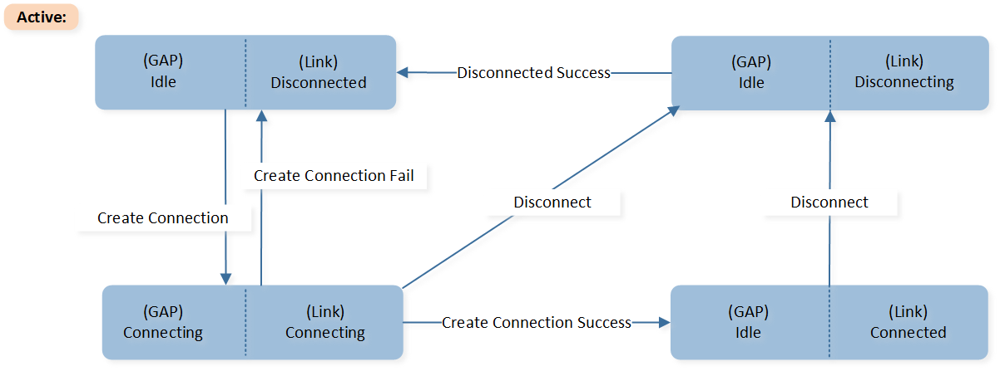
主动的 Connection 状态转换
idle 状态 | disconnected 状态
GAP Connection 状态为 idle 状态，Link 状态为 disconnected 状态，未建立 connection。
connecting 状态 | connecting 状态
Central 创建 connection，创建流程尚未完成。这是临时状态，GAP Connection 状态为 connecting 状态，Link 状态为 connecting 状态。若成功创建 connection，GAP Connection 状态转换为 idle 状态，Link 状态转换为 connected 状态。若创建 connection 失败，GAP Connection 状态回到 idle 状态，Link 状态回到 disconnected 状态。在此状态下，Central 可以断开链路，此时，GAP Connection 状态回到 idle 状态，Link 状态转换为 disconnecting 状态。
idle 状态 | connected 状态
成功创建 connection，GAP Connection 状态为 idle 状态，Link 状态为 connected 状态。
idle 状态 | disconnecting 状态
Central 终止 connection，终止流程尚未完成。这是临时状态，GAP Connection 状态为 idle 状态，Link 状态为 disconnecting 状态。若成功终止 connection，Link 状态转换为 disconnected 状态。
Peripheral 角色被动的 Connection 状态转换
{kind=link}
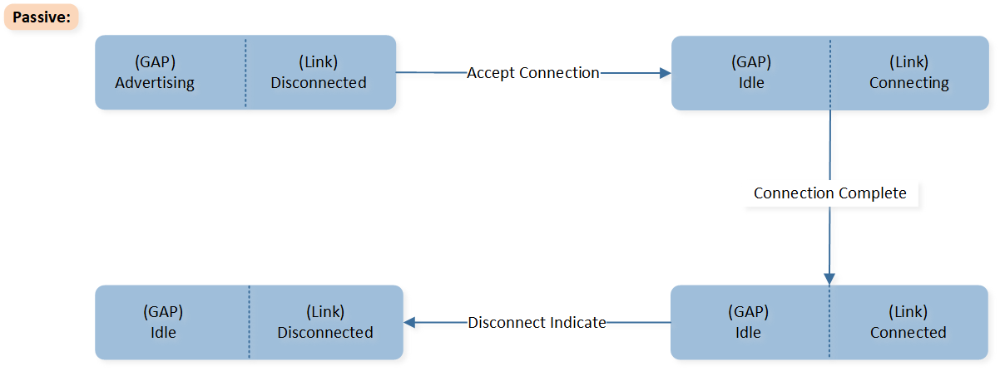
被动的 Connection 状态转换
Peripheral 接受 connection
当 Peripheral 收到 connect indication 后，GAP Advertising 状态将从 advertising 状态转换为 idle 状态，Link 状态将从 disconnected 状态转换为 connecting 状态。当创建 connection 流程完成之后，Link 状态将进入 connected 状态。
对端设备断开 connection
当对端设备断开 connection 且本地设备收到 disconnect indication 后，本地设备的 Link 状态将从 connected 状态转换为 disconnected 状态。
Extended Advertising
Extended Advertising 状态
不使用 LE Advertising Extensions 时，设备使用 Advertising 状态，可以视为存在一个简化的 advertising set。本节内容仅适用于使用 LE Advertising Extensions 的设备。
由于支持 LE Advertising Extensions，设备可以同时启动或停止多个 advertising set，因此 Extended Advertising 状态的变化需要结合 advertising set。Extended
Advertising 状态有四个子状态，idle 状态、start 状态、advertising 状态和 stop 状态，在 gap_ext_adv.h 中定义 Extended Advertising 状态的子状态。
/** @brief GAP extended advertising state. */
typedef enum
{
EXT_ADV_STATE_IDLE, /**< Idle, no advertising. */
EXT_ADV_STATE_START, /**< Start Advertising. A temporary state, haven't received the result. */
EXT_ADV_STATE_ADVERTISING, /**< Advertising. */
EXT_ADV_STATE_STOP /**< Stop Advertising. A temporary state, haven't received the result. */
}T_GAP_EXT_ADV_STATE;
{kind=link}
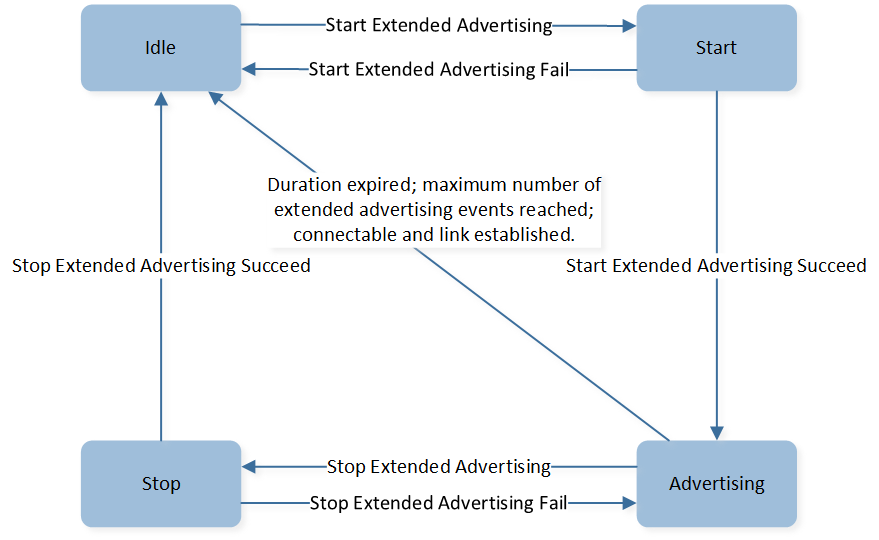
针对一个 advertising set 的 Extended Advertising 状态的转换
idle 状态
默认状态，不发送 advertisement。
start 状态
在 idle 状态启动 extended advertising 之后，启动 extended advertising 的流程尚未完成。start 状态为临时状态，若成功启动 extended advertising，则 Extended Advertising 状态进入 advertising 状态；若启动 extended advertising 失败，则 Extended Advertising 状态回到 idle 状态。
advertising 状态
成功启动 extended advertising。在此状态下，设备发送 advertisement。若 Duration 参数不为零，一旦 advertising 时间达到 Duration，Extended Advertising 状态将进入 idle 状态。若 extended advertising events 的最大值参数不为零，一旦达到 extended advertising events 的最大值，Extended Advertising 状态将进入 idle 状态。若广播可连接，一旦连上线，Extended Advertising 状态将进入 idle 状态。
stop 状态
在 advertising 状态停止 extended advertising 之后，停止 extended advertising 的流程尚未完成。stop 状态为临时状态，若成功停止 extended advertising，则 Extended Advertising 状态进入 idle 状态；若停止 extended advertising 失败，则 Extended Advertising 状态回到 advertising 状态。
GAP 消息
GAP 消息包括蓝牙状态消息和 GAP API 消息。蓝牙状态消息用于向 APP 通知蓝牙状态信息，包括 device 状态转换、connection 状态转换以及 bond 状态转换等。GAP API 消息用于向 APP 通知调用 API 后函数的执行状态。每个 API 都有相应的消息，更多关于 GAP 消息的信息参见 Bluetooth LE GAP 消息 和 Bluetooth LE GAP 回调函数 。
蓝牙状态消息
概述
本节介绍 Bluetooth LE GAP 消息模块，在 gap_msg.h 中定义 GAP 消息类型和消息数据结构。Bluetooth LE GAP 消息可以分为以下四种类型：
/** @defgroup GAP_MSG_TYPE GAP Bluetooth Message Type Definitions
* @brief Define the subtype of Message IO_MSG_TYPE_BT_STATUS.
* @{
*/
#define GAP_MSG_LE_DEV_STATE_CHANGE 0x01 //!< Device state change msg type.
#define GAP_MSG_LE_CONN_STATE_CHANGE 0x02 //!< Connection state change msg type.
#define GAP_MSG_LE_CONN_PARAM_UPDATE 0x03 //!< Connection parameter update changed msg type.
#define GAP_MSG_LE_CONN_MTU_INFO 0x04 //!< Connection MTU size info msg type.
#define GAP_MSG_LE_AUTHEN_STATE_CHANGE 0x05 //!< Authentication state change msg type.
#define GAP_MSG_LE_BOND_PASSKEY_DISPLAY 0x06 //!< Bond passkey display msg type.
#define GAP_MSG_LE_BOND_PASSKEY_INPUT 0x07 //!< Bond passkey input msg type.
#define GAP_MSG_LE_BOND_OOB_INPUT 0x08 //!< Bond passkey oob input msg type.
#define GAP_MSG_LE_BOND_USER_CONFIRMATION 0x09 //!< Bond user confirmation msg type.
#define GAP_MSG_LE_BOND_JUST_WORK 0x0A //!< Bond user confirmation msg type.
#define GAP_MSG_LE_EXT_ADV_STATE_CHANGE 0x0B //!< Extended advertising state change msg type.
Bluetooth LE GAP 消息处理流程如下：
APP 调用
gap_start_bt_stack()初始化 Bluetooth LE GAP 消息模块，初始化代码如下：void app_main_task(void *p_param) { uint8_t event; os_msg_queue_create(&io_queue_handle, "ioQ", MAX_NUMBER_OF_IO_MESSAGE, sizeof(T_IO_MSG)); os_msg_queue_create(&evt_queue_handle, "evtQ", MAX_NUMBER_OF_EVENT_MESSAGE, sizeof(uint8_t)); gap_start_bt_stack(evt_queue_handle, io_queue_handle, MAX_NUMBER_OF_GAP_MESSAGE); ...... }
GAP 向
io_queue_handle发送 GAP 消息，APP task 接收到 GAP 消息，并调用app_handle_io_msg()来处理该消息 (事件：EVENT_IO_TO_APP，类型:IO_MSG_TYPE_BT_STATUS)。void app_main_task(void *p_param) { ...... while (true) { if (os_msg_recv(evt_queue_handle, &event, 0xFFFFFFFF) == true) { if (event == EVENT_IO_TO_APP) { T_IO_MSG io_msg; if (os_msg_recv(io_queue_handle, &io_msg, 0) == true) { app_handle_io_msg(io_msg); } } ...... } ......
GAP 消息处理函数如下:
void app_handle_io_msg(T_IO_MSG io_msg) { uint16_t msg_type = io_msg.type; switch (msg_type) { case IO_MSG_TYPE_BT_STATUS: { app_handle_gap_msg(&io_msg); } break; default: break; } } void app_handle_gap_msg(T_IO_MSG *p_gap_msg) { T_LE_GAP_MSG gap_msg; uint8_t conn_id; memcpy(&gap_msg, &p_gap_msg->u.param, sizeof(p_gap_msg->u.param)); APP_PRINT_TRACE1("app_handle_gap_msg: subtype %d", p_gap_msg->subtype); switch (p_gap_msg->subtype) { case GAP_MSG_LE_DEV_STATE_CHANGE: { app_handle_dev_state_evt(gap_msg.msg_data.gap_dev_state_change.new_state, gap_msg.msg_data.gap_dev_state_change.cause); } break; ...... }
Device 状态消息
GAP_MSG_LE_DEV_STATE_CHANGE
该消息用于通知 GAP Device 状态 ( T_GAP_DEV_STATE )，GAP Device 状态包括以下五种子状态:
gap_init_state: GAP 初始化状态。gap_adv_state: GAP Advertising 状态。gap_adv_sub_state: GAP Advertising 子状态 （该状态仅适用于gap_adv_state为GAP_ADV_STATE_IDLE的情况）。gap_scan_state: GAP Scan 状态。gap_conn_state: GAP Connection 状态。
消息数据结构为 T_GAP_DEV_STATE_CHANGE。
/** @brief Device State.*/
typedef struct
{
uint8_t gap_init_state: 1; //!< @ref GAP_INIT_STATE
uint8_t gap_adv_sub_state: 1; //!< @ref GAP_ADV_SUB_STATE
uint8_t gap_adv_state: 2; //!< @ref GAP_ADV_STATE
uint8_t gap_scan_state: 2; //!< @ref GAP_SCAN_STATE
uint8_t gap_conn_state: 2; //!< @ref GAP_CONN_STATE
} T_GAP_DEV_STATE;
/** @brief The msg_data of GAP_MSG_LE_DEV_STATE_CHANGE.*/
typedef struct
{
T_GAP_DEV_STATE new_state;
uint16_t cause;
} T_GAP_DEV_STATE_CHANGE;
当消息 GAP_MSG_LE_DEV_STATE_CHANGE 的参数 gap_init_state 为 GAP_INIT_STATE_STACK_READY 时，表示 Bluetooth Host 准备好了。示例代码如下:
void app_handle_dev_state_evt(T_GAP_DEV_STATE new_state, uint16_t cause)
{
APP_PRINT_INFO4("app_handle_dev_state_evt: init state %d, adv state %d, scan state %d, cause 0x%x",
new_state.gap_init_state, new_state.gap_adv_state, new_state.gap_scan_state, cause);
if (gap_dev_state.gap_init_state != new_state.gap_init_state)
{
if (new_state.gap_init_state == GAP_INIT_STATE_STACK_READY)
{
APP_PRINT_INFO0("GAP stack ready");
}
}
if (gap_dev_state.gap_scan_state != new_state.gap_scan_state)
{
if (new_state.gap_scan_state == GAP_SCAN_STATE_IDLE)
{
APP_PRINT_INFO0("GAP scan stop");
}
else if(new_state.gap_scan_state == GAP_SCAN_STATE_SCANNING)
{
APP_PRINT_INFO0("GAP scan start");
}
}
if (gap_dev_state.gap_adv_state != new_state.gap_adv_state)
{
if (new_state.gap_adv_state == GAP_ADV_STATE_IDLE)
{
if (new_state.gap_adv_sub_state == GAP_ADV_TO_IDLE_CAUSE_CONN)
{
APP_PRINT_INFO0("GAP adv stopped: because connection created");
}
else
{
APP_PRINT_INFO0("GAP adv stopped");
}
}
else if (new_state.gap_adv_state == GAP_ADV_STATE_ADVERTISING)
{
APP_PRINT_INFO0("GAP adv start");
}
}
gap_dev_state = new_state;
}
Connection 相关消息
GAP_MSG_LE_CONN_STATE_CHANGE
该消息用于通知 Link 状态 ( T_GAP_CONN_STATE)。
消息数据结构为 T_GAP_CONN_STATE_CHANGE，示例代码如下：
void app_handle_conn_state_evt(uint8_t conn_id, T_GAP_CONN_STATE new_state, uint16_t disc_cause)
{
APP_PRINT_INFO4("app_handle_conn_state_evt: conn_id %d old_state %d new_state %d, disc_cause 0x%x",
conn_id, gap_conn_state, new_state, disc_cause);
switch (new_state)
{
case GAP_CONN_STATE_DISCONNECTED:
{
if ((disc_cause != (HCI_ERR | HCI_ERR_REMOTE_USER_TERMINATE))
&& (disc_cause != (HCI_ERR | HCI_ERR_LOCAL_HOST_TERMINATE)))
{
APP_PRINT_ERROR1("app_handle_conn_state_evt: connection lost cause 0x%x", disc_cause);
}
}
break;
case GAP_CONN_STATE_CONNECTED:
{
......
}
break;
default:
break;
}
gap_conn_state = new_state;
}
GAP_MSG_LE_CONN_PARAM_UPDATE
该消息用于通知连接参数更新状态，更新状态包括以下三个子状态：
GAP_CONN_PARAM_UPDATE_STATUS_PENDING若本地设备调用
le_update_conn_param()更新连接参数，当连接参数更新请求成功但未收到 connection update complete event 时，GAP 层将发送该状态消息。GAP_CONN_PARAM_UPDATE_STATUS_SUCCESS更新成功。
GAP_CONN_PARAM_UPDATE_STATUS_FAIL更新失败，参数 cause 表示失败原因。
消息数据结构为 T_GAP_CONN_PARAM_UPDATE，示例代码如下:
void app_handle_conn_param_update_evt(uint8_t conn_id, uint8_t status, uint16_t cause)
{
switch(status)
{
case GAP_CONN_PARAM_UPDATE_STATUS_SUCCESS:
......
break;
case GAP_CONN_PARAM_UPDATE_STATUS_FAIL:
......
break;
case GAP_CONN_PARAM_UPDATE_STATUS_PENDING:
......
break;
}
}
GAP_MSG_LE_CONN_MTU_INFO
该消息用于通知 exchange MTU procedure 已完成。Exchange MTU
procedure 的目的是更新 client 和 server 之间交互数据包的最大长度，即更新 ATT_MTU。消息数据结构为 T_GAP_CONN_MTU_INFO，示例代码如下:
void app_handle_conn_mtu_info_evt(uint8_t conn_id, uint16_t mtu_size)
{
APP_PRINT_INFO2("app_handle_conn_mtu_info_evt: conn_id %d, mtu_size %d", conn_id, mtu_size);
}
Authentication 相关消息
配对方法与 Authentication 消息的对应关系如表-Authentication 相关消息 所示。
Pairing Method |
Message |
|---|---|
Just Works |
|
Numeric Comparison |
|
Passkey Entry |
|
OOB |
GAP_MSG_LE_AUTHEN_STATE_CHANGE
该消息表示新的 Authentication 状态。
-
Authentication 流程已开始。
-
Authentication 流程已完成，参数 cause 表示 Authentication 的结果。
消息数据结构为 T_GAP_AUTHEN_STATE，示例代码如下：
void app_handle_authen_state_evt(uint8_t conn_id, uint8_t new_state, uint16_t cause)
{
APP_PRINT_INFO2("app_handle_authen_state_evt:conn_id %d, cause 0x%x", conn_id, cause);
switch (new_state)
{
case GAP_AUTHEN_STATE_STARTED:
{
APP_PRINT_INFO0("app_handle_authen_state_evt: GAP_AUTHEN_STATE_STARTED");
}
break;
case GAP_AUTHEN_STATE_COMPLETE:
{
if (cause == GAP_SUCCESS)
{
APP_PRINT_INFO0("app_handle_authen_state_evt: GAP_AUTHEN_STATE_COMPLETE pair success");
}
else
{
APP_PRINT_INFO0("app_handle_authen_state_evt: GAP_AUTHEN_STATE_COMPLETE pair failed");
}
}
break;
default:
break;
}
}
GAP_MSG_LE_BOND_PASSKEY_DISPLAY
该消息用于表示配对方法为 Passkey Entry，且本地设备需要显示 Passkey。
在本地设备显示 Passkey，且对端设备需要输入相同的 Passkey。一旦收到该消息，APP 可以在用户终端界面显示 Passkey（处理 Passkey 的方法取决于 APP），此外 APP 需要调用 le_bond_passkey_display_confirm() 确认是否与对端设备配对。
消息数据结构为 T_GAP_BOND_PASSKEY_DISPLAY，示例代码如下：
void app_handle_gap_msg(T_IO_MSG *p_gap_msg)
{
......
case GAP_MSG_LE_BOND_PASSKEY_DISPLAY:
{
uint32_t display_value = 0;
conn_id = gap_msg.msg_data.gap_bond_passkey_display.conn_id;
le_bond_get_display_key(conn_id, &display_value);
APP_PRINT_INFO1("GAP_MSG_LE_BOND_PASSKEY_DISPLAY: passkey %d", display_value);
le_bond_passkey_display_confirm(conn_id, GAP_CFM_CAUSE_ACCEPT);
}
break;
}
GAP_MSG_LE_BOND_PASSKEY_INPUT
该消息用于表示配对方法为 Passkey Entry，且本地设备需要输入 Passkey。
对端设备会显示 Passkey，且本地设备需要输入相同的 Passkey。一旦收到该消息，APP 需要调用 le_bond_passkey_input_confirm() 确认是否与对端设备配对。
消息数据结构为 T_GAP_BOND_PASSKEY_INPUT，示例代码如下：
void app_handle_gap_msg(T_IO_MSG *p_gap_msg)
{
......
case GAP_MSG_LE_BOND_PASSKEY_INPUT:
{
......
le_bond_passkey_input_confirm(conn_id, passkey, GAP_CFM_CAUSE_ACCEPT);
}
break;
}
GAP_MSG_LE_BOND_OOB_INPUT
该消息用于表示配对方法为 OOB。
本地设备需要提供与对端设备交换获得的 OOB 数据。APP 需要调用 le_bond_oob_input_confirm() 确认是否与对端设备配对。
消息数据结构为 T_GAP_BOND_OOB_INPUT，示例代码如下：
void app_handle_gap_msg(T_IO_MSG *p_gap_msg)
{
......
case LE_GAP_MSG_TYPE_BOND_OOB_INPUT:
{
uint8_t oob_data[GAP_OOB_LEN] = {0, 0, 0, 0, 0, 0, 0, 0, 0, 0, 0, 0, 0, 0, 0, 0};
conn_id = gap_msg.msg_data.gap_bond_oob_input.conn_id;
APP_PRINT_INFO0("GAP_MSG_LE_BOND_OOB_INPUT");
le_bond_set_param(GAP_PARAM_BOND_OOB_DATA, GAP_OOB_LEN, oob_data);
le_bond_oob_input_confirm(conn_id, GAP_CFM_CAUSE_ACCEPT);
}
break;
}
GAP_MSG_LE_BOND_USER_CONFIRMATION
该消息用于表示配对方法为 Numeric Comparison。
在本地设备和对端设备均显示需要校验的数值，用户需要确认该数值是否相同。APP 需要调用 le_bond_user_confirm() 确认是否与对端设备配对。
消息数据结构为 T_GAP_BOND_USER_CONF，示例代码如下：
void app_handle_gap_msg(T_IO_MSG *p_gap_msg)
{
......
case GAP_MSG_LE_BOND_USER_CONFIRMATION:
{
uint32_t display_value = 0;
conn_id = gap_msg.msg_data.gap_bond_user_conf.conn_id;
le_bond_get_display_key(conn_id, &display_value);
APP_PRINT_INFO1("GAP_MSG_LE_BOND_USER_CONFIRMATION: passkey %d", display_value);
le_bond_user_confirm(conn_id, GAP_CFM_CAUSE_ACCEPT);
}
break;
}
GAP_MSG_LE_BOND_JUST_WORK
该消息用于表示配对方法为 Just Works。APP 需要调用 le_bond_just_work_confirm() 确认是否与对端设备配对。
消息数据结构为 T_GAP_BOND_JUST_WORK_CONF，示例代码如下：
void app_handle_gap_msg(T_IO_MSG *p_gap_msg)
{
......
case GAP_MSG_LE_BOND_JUST_WORK:
{
conn_id = gap_msg.msg_data.gap_bond_just_work_conf.conn_id;
le_bond_just_work_confirm(conn_id, GAP_CFM_CAUSE_ACCEPT);
APP_PRINT_INFO0("GAP_MSG_LE_BOND_JUST_WORK");
}
break;
}
Extended Advertising 状态消息
GAP_MSG_LE_EXT_ADV_STATE_CHANGE
该消息用于通知 Extended Advertising 状态 （ T_GAP_EXT_ADV_STATE ）。
消息数据结构为 T_GAP_EXT_ADV_STATE_CHANGE，示例代码如下：
void app_handle_ext_adv_state_evt(uint8_t adv_handle, T_GAP_EXT_ADV_STATE new_state, uint16_t cause)
{
for (int i = 0; i < APP_MAX_ADV_SET; i++)
{
if (ext_adv_state[i].adv_handle == adv_handle)
{
APP_PRINT_INFO2("app_handle_ext_adv_state_evt: adv_handle = %d oldState = %d",
ext_adv_state[i].adv_handle, ext_adv_state[i].ext_adv_state);
ext_adv_state[i].ext_adv_state = new_state;
break;
}
}
APP_PRINT_INFO2("app_handle_ext_adv_state_evt: adv_handle = %d newState = %d",
adv_handle, new_state);
switch (new_state)
{
/* device is idle */
case EXT_ADV_STATE_IDLE:
{
APP_PRINT_INFO2("EXT_ADV_STATE_IDLE: adv_handle %d, cause 0x%x", adv_handle, cause);
}
break;
/* device is advertising */
case EXT_ADV_STATE_ADVERTISING:
{
APP_PRINT_INFO2("EXT_ADV_STATE_ADVERTISING: adv_handle %d, cause 0x%x", adv_handle, cause);
}
break;
default:
break;
}
}
Bluetooth LE GAP 回调函数
本节介绍 Bluetooth LE GAP 回调函数，GAP 层使用注册的回调函数发送消息给 APP。
LE GAP 回调消息在 gap_callback_le.h 文件中定义。有关每个函数相关消息的详细信息，请参阅 API 注释。
不同于 Bluetooth LE GAP 消息，回调函数是直接被 GAP 层调用的。因此，不建议在回调函数内执行耗时操作，耗时操作会使底层处理流程延缓和暂停，在某些情况下会引发异常。若 APP 在收到 GAP 层发送的消息后确实需要执行耗时操作，在 APP 处理该消息时，可以通过 APP 回调函数将该消息发送到 APP 的队列 ，APP 回调函数将在把消息发送到队列之后结束，因此该操作不会延缓底层处理流程。
部分常用的消息定义如下：
/* GAP API message */
//gap_le.h
#define GAP_MSG_LE_MODIFY_WHITE_LIST 0x01 //!<Response msg type for le_modify_white_list
#define GAP_MSG_LE_SET_RAND_ADDR 0x02 //!<Response msg type for le_set_rand_addr
#define GAP_MSG_LE_SET_HOST_CHANN_CLASSIF 0x03 //!<Response msg type for le_set_host_chann_classif
#define GAP_MSG_LE_WRITE_DEFAULT_DATA_LEN 0x04 //!<Response msg type for le_write_default_data_len
//gap_conn_le.h
#define GAP_MSG_LE_READ_RSSI 0x10 //!<Response msg type for le_read_rssi
#define GAP_MSG_LE_READ_CHANN_MAP 0x11 //!<Response msg type for le_read_chann_map
#define GAP_MSG_LE_DISABLE_SLAVE_LATENCY 0x12 //!<Response msg type for le_disable_slave_latency
#define GAP_MSG_LE_SET_DATA_LEN 0x13 //!<Response msg type for le_set_data_len
#define GAP_MSG_LE_DATA_LEN_CHANGE_INFO 0x14 //!<Notification msg type for data length changed
#define GAP_MSG_LE_CONN_UPDATE_IND 0x15 //!<Indication for le connection parameter update
#define GAP_MSG_LE_CREATE_CONN_IND 0x16 //!<Indication for create le connection
#define GAP_MSG_LE_PHY_UPDATE_INFO 0x17 //!<Information for LE PHY update
#define GAP_MSG_LE_UPDATE_PASSED_CHANN_MAP 0x18 //!<Response msg type for le_update_passed_chann_map
#define GAP_MSG_LE_REMOTE_FEATS_INFO 0x19 //!<Information for remote device supported features
#define GAP_MSG_LE_SET_CONN_TX_PWR 0x1A //!<Response msg type for le_set_conn_tx_power
#define GAP_MSG_LE_READ_REMOTE_VERSION 0x1B //!<Response msg type for le_read_remote_version
#define GAP_MSG_LE_ADV_SET_CONN_OWN_ADDR_TYPE_INFO 0x1C //!<Information of own address type for advertiser using adv set
//gap_bond_le.h
#define GAP_MSG_LE_BOND_MODIFY_INFO 0x20 //!<Notification msg type for bond modify
#define GAP_MSG_LE_KEYPRESS_NOTIFY 0x21 //!<Response msg type for le_bond_keypress_notify
#define GAP_MSG_LE_KEYPRESS_NOTIFY_INFO 0x22 //!<Notification msg type for le_bond_keypress_notify
#define GAP_MSG_LE_GATT_SIGNED_STATUS_INFO 0x23 //!<Notification msg type for le signed status information
/* The type of callback will only be used when gap_param_key_manager equals 2 and no matching key entry is found*/
#define GAP_MSG_LE_BOND_KEY_REQ 0x24 //!<Notification msg type for le bond key request information
//gap_scan.h
#define GAP_MSG_LE_SCAN_INFO 0x30 //!<Notification msg type for le scan
#define GAP_MSG_LE_DIRECT_ADV_INFO 0x31 //!<Notification msg type for le direct adv info
//gap_adv.h
#define GAP_MSG_LE_ADV_UPDATE_PARAM 0x40 //!<Response msg type for le_adv_update_param
#define GAP_MSG_LE_ADV_READ_TX_POWER 0x41 //!<Response msg type for le_adv_read_tx_power
#define GAP_MSG_LE_ADV_SET_TX_POWER 0x42 //!<Response msg type for le_adv_set_tx_power
//gap_ext_scan.h
#define GAP_MSG_LE_EXT_ADV_REPORT_INFO 0x50 //!<Notification msg type for le extended adv report
/* The type of callback will only be used after APP calls @ref le_ext_scan_gap_msg_info_way(false). */
#define GAP_MSG_LE_EXT_SCAN_STATE_CHANGE_INFO 0x51 //!<Notification msg type for extended scanning state
//gap_ext_adv.h
#define GAP_MSG_LE_EXT_ADV_START_SETTING 0x60 //!<Response msg type for le_ext_adv_start_setting
#define GAP_MSG_LE_EXT_ADV_REMOVE_SET 0x61 //!<Response msg type for le_ext_adv_remove_set
#define GAP_MSG_LE_EXT_ADV_CLEAR_SET 0x62 //!<Response msg type for le_ext_adv_clear_set
#define GAP_MSG_LE_EXT_ADV_ENABLE 0x63 //!<Response msg type for le_ext_adv_enable
#define GAP_MSG_LE_EXT_ADV_DISABLE 0x64 //!<Response msg type for le_ext_adv_disable
#define GAP_MSG_LE_SCAN_REQ_RECEIVED_INFO 0x65 //!<Notification msg type for le scan received info
/* The type of callback will only be used after APP calls @ref le_ext_adv_gap_msg_info_way(false). */
#define GAP_MSG_LE_EXT_ADV_STATE_CHANGE_INFO 0x66 //!<Notification msg type for extended advertising state
#define GAP_MSG_LE_GAP_STATE_MSG 0xB0
#define GAP_MSG_LE_CONN_INFO 0xD2 //!<Msg type for LE connection
Bluetooth LE GAP 回调函数的使用方法如下：
注册回调函数
void app_le_gap_init(void) { ...... le_register_app_cb(app_gap_callback); }
处理 GAP 回调函数消息
T_APP_RESULT app_gap_callback(uint8_t cb_type, void *p_cb_data) { T_APP_RESULT result = APP_RESULT_SUCCESS; T_LE_CB_DATA *p_data = (T_LE_CB_DATA *)p_cb_data; switch (cb_type) { case GAP_MSG_LE_DATA_LEN_CHANGE_INFO: APP_PRINT_INFO3("GAP_MSG_LE_DATA_LEN_CHANGE_INFO: conn_id %d, tx octets 0x%x, max_tx_time 0x%x", p_data->p_le_data_len_change_info->conn_id, p_data->p_le_data_len_change_info->max_tx_octets, p_data->p_le_data_len_change_info->max_tx_time); break; ...... } }
Bluetooth LE GAP 回调函数消息概述
本节介绍 GAP 回调函数消息，在 gap_callback_le.h 中定义 GAP 回调函数消息类型和消息数据。由于 GAP 层提供的大部分接口都是异步的，因此 GAP 层使用回调函数发送响应信息给 APP。例如，APP 调用 le_read_rssi() 读取 RSSI，若返回值为 GAP_CAUSE_SUCCESS，则表示成功发送请求。此时，APP 需要等待 GAP_MSG_LE_READ_RSSI 消息以获取结果。
备注
本章提供的所有参考 API 都应在 Bluetooth Host 准备就绪后调用。
void app_handle_dev_state_evt(T_GAP_DEV_STATE new_state, uint16_t cause)
{
APP_PRINT_INFO3("app_handle_dev_state_evt: init state %d, adv state %d, cause 0x%x",
new_state.gap_init_state, new_state.gap_adv_state, cause);
if (gap_dev_state.gap_init_state != new_state.gap_init_state)
{
if (new_state.gap_init_state == GAP_INIT_STATE_STACK_READY)
{
// GAP_INIT_STATE_STACK_READY means Bluetooth Host ready. All Reference API provided in this chapter shall be called after the Bluetooth Host is ready.
}
}
gap_dev_state = new_state;
}
Bluetooth LE GAP 回调函数消息的详细信息如下：
gap_le.h相关消息gap_le.h 相关消息 Callback Type (
cb_type)Callback Data (
p_cb_data)Reference API
T_LE_MODIFY_WHITE_LIST_RSP *p_le_modify_white_list_rspT_LE_SET_RAND_ADDR_RSP *p_le_set_rand_addr_rspT_LE_SET_HOST_CHANN_CLASSIF_RSP *p_le_set_host_chann_classif_rspT_LE_CAUSE le_causegap_conn_le.h相关消息gap_conn_le.h 相关消息 Callback Type (
cb_type)Callback Data (
p_cb_data)Reference API
T_LE_READ_RSSI_RSP *p_le_read_rssi_rspT_LE_READ_CHANN_MAP_RSP *p_le_read_chann_map_rspT_LE_DISABLE_SLAVE_LATENCY_RSP *p_le_disable_slave_latency_rspT_LE_SET_DATA_LEN_RSP *p_le_set_data_len_rspT_LE_DATA_LEN_CHANGE_INFO *p_le_data_len_change_infoT_LE_CONN_UPDATE_IND *p_le_conn_update_indT_LE_CREATE_CONN_IND *p_le_create_conn_indT_LE_PHY_UPDATE_INFO *p_le_phy_update_infoT_LE_UPDATE_PASSED_CHANN_MAP_RSP *p_le_update_passed_chann_map_rspT_LE_REMOTE_FEATS_INFO *p_le_remote_feats_infoT_LE_CAUSE le_causeGAP_MSG_LE_DATA_LEN_CHANGE_INFO：该消息用于向 APP 通知在 Link Layer 的发送或接收方向其最大 Payload 长度或数据包的最大传输时间的变化。GAP_MSG_LE_CONN_UPDATE_IND：该消息仅适用于 Central 角色。当对端设备请求更新 Connection 参数时，GAP 层将通过回调函数发送该消息并检查回调函数的返回值。因此，APP 可以返回APP_RESULT_ACCEPT以接受参数更新，或者返回APP_RESULT_REJECT以拒绝参数更新。T_APP_RESULT app_gap_callback(uint8_t cb_type, void *p_cb_data) { ...... case GAP_MSG_LE_CONN_UPDATE_IND: APP_PRINT_INFO5("GAP_MSG_LE_CONN_UPDATE_IND: conn_id %d, conn_interval_max 0x%x, conn_interval_min 0x%x, conn_latency 0x%x,supervision_timeout 0x%x", p_data->p_le_conn_update_ind->conn_id, p_data->p_le_conn_update_ind->conn_interval_max, p_data->p_le_conn_update_ind->conn_interval_min, p_data->p_le_conn_update_ind->conn_latency, p_data->p_le_conn_update_ind->supervision_timeout); /* if reject the proposed connection parameter from peer device, use APP_RESULT_REJECT. */ result = APP_RESULT_ACCEPT; break; }
GAP_MSG_LE_CREATE_CONN_IND：该消息仅适用于 Peripheral 角色。由 APP 决定是否建立 connection。当 Central 设备发起 connection 时，默认情况下，GAP 层不会发送该消息并直接接受 connection。若 APP 希望使用该功能，需要将GAP_PARAM_HANDLE_CREATE_CONN_IND设为true，示例代码如下：T_APP_RESULT app_gap_callback(uint8_t cb_type, void *p_cb_data) { ...... uint8_t handle_conn_ind = true; le_set_gap_param(GAP_PARAM_HANDLE_CREATE_CONN_IND, sizeof(handle_conn_ind), &handle_conn_ind); } T_APP_RESULT app_gap_callback(uint8_t cb_type, void *p_cb_data) { ...... case GAP_MSG_LE_CREATE_CONN_IND: /* if reject the connection from peer device, use APP_RESULT_REJECT. */ result = APP_RESULT_ACCEPT; break; }
GAP_MSG_LE_PHY_UPDATE_INFO：该消息表示 Controller 已经切换正在使用的发射机 PHY 或接收机 PHY。GAP_MSG_LE_REMOTE_FEATS_INFO：在 connection 建立成功后，controller 会主动读取对端设备的 feature。读取结果会通过该消息通知给 application。
gap_bond_le.h相关消息gap_bond_le.h 相关消息 Callback Type (
cb_type)Callback Data (
p_cb_data)Reference API
T_LE_BOND_MODIFY_INFO *p_le_bond_modify_infoT_LE_KEYPRESS_NOTIFY_RSP *p_le_keypress_notify_rspT_LE_KEYPRESS_NOTIFY_INFO *p_le_keypress_notify_infoT_LE_GATT_SIGNED_STATUS_INFO *p_le_gatt_signed_status_infoGAP_MSG_LE_KEYPRESS_NOTIFY_INFO：该消息表示 SMP 已收到 keypress notification。GAP_MSG_LE_GATT_SIGNED_STATUS_INFO：该消息表示 GATT signed 状态信息。GAP_MSG_LE_BOND_MODIFY_INFO：该消息用于向 APP 通知绑定信息已变更，更多信息参见 LE 密钥管理。
gap_scan.h相关消息gap_scan.h 相关消息 Callback Type (
cb_type)Callback Data (
p_cb_data)Reference API
T_LE_SCAN_INFO *p_le_scan_infoT_LE_DIRECT_ADV_INFO *p_le_direct_adv_infoGAP_MSG_LE_SCAN_INFO：Scan 状态为GAP_SCAN_STATE_SCANNING，当 Bluetooth Host 收到 advertising 数据或 scan response 数据时，GAP 将发送该消息以通知 APP。GAP_MSG_LE_DIRECT_ADV_INFO：Scan 状态为GAP_SCAN_STATE_SCANNING且 Scan Filter Policy 为GAP_SCAN_FILTER_ANY_RPA或GAP_SCAN_FILTER_WHITE_LIST_RPA，当 Bluetooth Host 收到 directed advertising 数据包且其 initiator 地址为 RPA，无法解析该 RPA 时，GAP 层将发送该消息以通知 APP。
gap_adv.h相关消息gap_adv.h 相关消息 Callback Type (
cb_type)Callback Data (
p_cb_data)Reference API
T_LE_ADV_UPDATE_PARAM_RSP *p_le_adv_update_param_rspT_LE_ADV_READ_TX_POWER_RSP *p_le_adv_read_tx_power_rspT_LE_CAUSE le_causeT_LE_CAUSE le_causegap_dtm.h相关消息gap_dtm.h 相关消息 Callback Type (
cb_type)Callback Data (
p_cb_data)Reference API
T_LE_CAUSE le_causeT_LE_CAUSE le_causeT_LE_DTM_TEST_END_RSP *p_le_dtm_test_end_rspT_LE_CAUSE le_causeT_LE_CAUSE le_causeT_LE_CAUSE le_causeT_LE_CAUSE le_causeT_LE_CAUSE le_causegap_ext_scan.h相关消息gap_ext_scan.h 相关消息 Callback Type (
cb_type)Callback Data (
p_cb_data)Reference API
T_LE_EXT_ADV_REPORT_INFO *p_le_ext_adv_report_infoGAP_MSG_LE_EXT_ADV_REPORT_INFO：使用 LE Advertising Extensions 且 Scan 状态为GAP_SCAN_STATE_SCANNING，当 Bluetooth Host 收到 advertising 数据或 scan response 数据时，GAP 层将发送该消息以通知 APP。
gap_ext_adv.h相关消息gap_ext_adv.h 相关消息 Callback Type (
cb_type)Callback Data (
p_cb_data)Reference API
T_LE_EXT_ADV_START_SETTING_RSP *p_le_ext_adv_start_setting_rspT_LE_EXT_ADV_REMOVE_SET_RSP *p_le_ext_adv_remove_set_rspT_LE_EXT_ADV_CLEAR_SET_RSP *p_le_ext_adv_clear_set_rspT_LE_CAUSE le_causeT_LE_CAUSE le_causeGAP_MSG_LE_EXT_ADV_START_SETTING: 该消息表示本地设备为一个 advertising set 设置 extended advertising 相关参数的操作已完成。GAP_MSG_LE_EXT_ADV_REMOVE_SET: 该消息表示本地设备移除一个 advertising set 的操作已完成。GAP_MSG_LE_EXT_ADV_CLEAR_SET: 该消息表示本地设备清除所有 advertising sets 的操作已完成。GAP_MSG_LE_EXT_ADV_ENABLE: 该消息表示本地设备启动一个或多个 advertising sets 的 extended advertising 的操作已完成。GAP_MSG_LE_EXT_ADV_DISABLE: 该消息表示本地设备停止一个或多个 advertising sets 的 extended advertising 的操作已完成。GAP_MSG_LE_SCAN_REQ_RECEIVED_INFO: 调用le_ext_adv_set_adv_param()使能 scan request notifications 且 Extended Advertising 状态为EXT_ADV_STATE_ADVERTISING，当 Bluetooth Host 收到 scan request，GAP 层将使用该消息通知 APP。
gap_vendor.h相关消息gap_vendor.h 相关消息 Callback Type (
cb_type)Callback Data (
p_cb_data)Reference API
T_GAP_VENDOR_CMD_RSP *p_gap_vendor_cmd_rsp
APP 消息流
APP 消息流如图所示：
{kind=link}
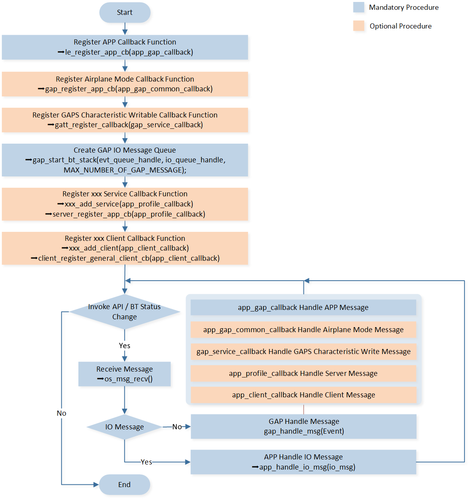
APP 消息流
发送消息给 APP 的两种方法
回调函数
首先，APP 需要注册回调函数。当上行消息送到 GAP 层之后，GAP 层将调用注册的回调函数以通知 APP 处理该消息。
消息队列
首先，APP 需要创建消息队列。当上行消息送到 GAP 层之后，GAP 层将消息发送到消息队列，APP 将循环接收消息队列中的消息。
初始化
注册回调函数
为接收 GAP API 消息，APP 需要通过
le_register_app_cb()注册 APP 回调函数。为接收 Airplane Mode 消息，APP 需要通过
gap_register_app_cb()注册 APP 回调函数。为接收写 GAPS characteristic 的消息，APP 需要通过
gatt_register_callback()注册 APP 回调函数。若 APP 需要使用 services，为接收 server 消息，APP 需要通过
xxx_add_service和server_register_app_cb()注册 service 回调函数。若 APP 需要使用 clients，为接收 client 消息，APP 需要通过
xxx_add_client注册 client 回调函数。
创建消息队列
为接收蓝牙状态消息，APP 需要通过
gap_start_bt_stack()创建 IO 消息队列。循环接收消息
APP main task 循环接收消息。若收到的事件是发送给 APP 的，APP 收到 IO 消息，那么 APP 将调用
app_handle_io_msg由 APP 处理该消息。否则，APP 将调用gap_handle_msg()由 GAP 层处理该消息。消息处理
若消息是由回调函数发送的，则由初始化过程中注册的函数处理该消息。若消息是由消息队列发送的，则由另一个函数处理该消息。
GAP信息存储
在 gap_storage_le.h 中定义常量和函数原型。本地协议栈信息和绑定信息保存在 FTL 中，更多关于 FTL 的信息参见 FTL简介。
FTL简介
Bluetooth Host 和 user application 使用 FTL 作为抽象层保存或载入 flash 中的数据。
FTL布局
对于 RTL87x2C/RTL87x2D/RTL87x2E，LE FTL 布局如图-LE FTL 布局1 所示。
{kind=link}
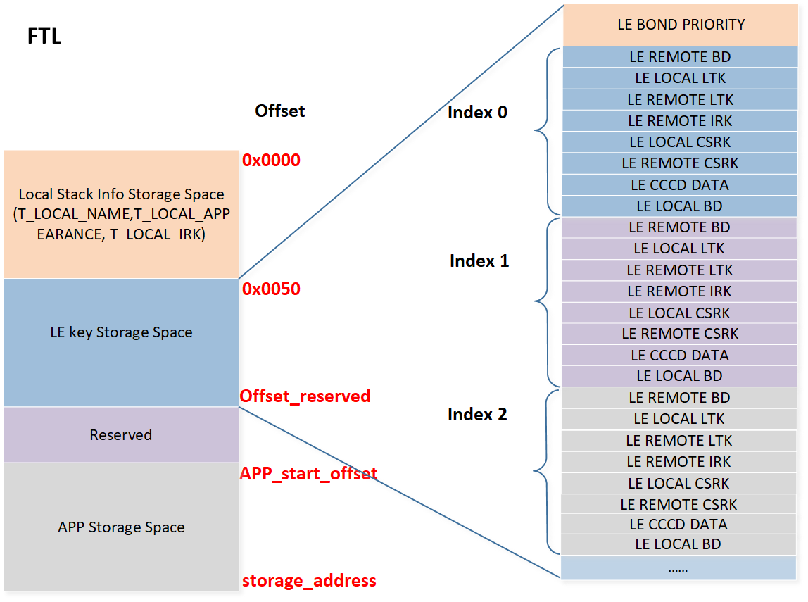
LE FTL 布局1
对于 RTL87x2G/RTL87x2H，LE FTL 布局如图-LE FTL 布局 2 所示。
{kind=link}
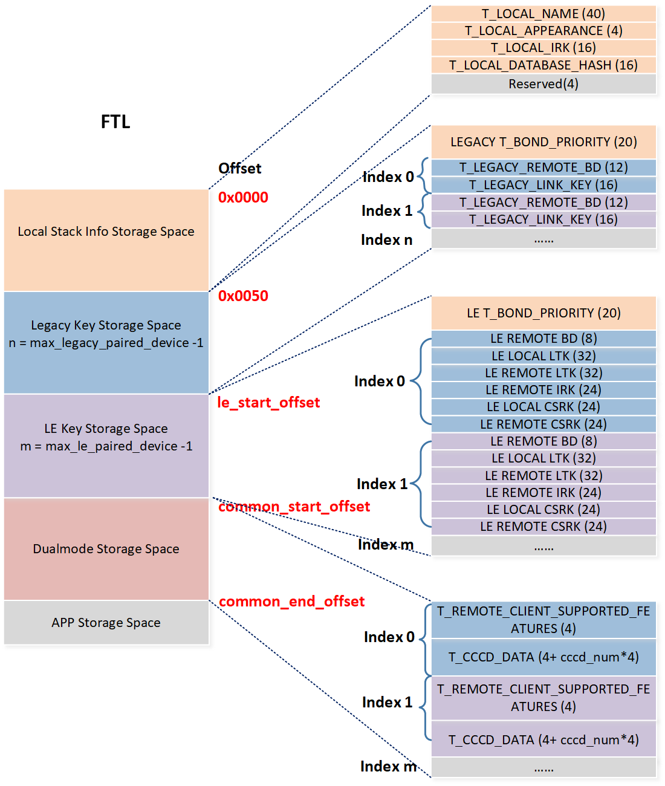
LE FTL 布局 2
FTL 可以分为以下区域：
Local Bluetooth Host information storage space
地址范围：0x0000 - 0x004F
该区域用于存储本地 Bluetooth Host 信息，包括 device name、device appearance 和本地设备 IRK，更多信息参见 本地 Bluetooth Host 信息存储。
Legacy key storage space
地址范围：0x50- (
le_start_offset- 1)该区域用于存储 legacy key 信息。
le_start_offset是可变值：le_start_offset = 0x50 + 20 + max_legacy_paired_device * 28。max_legacy_paired_device：该参数用于配置存储 legacy 设备的最大数目，由于 RTL87x2G 是 LE only 的，该值为 0。
LE key storage space
地址范围：0x0050~ (
Offset_reserved-1)该区域用于存储 LE 密钥信息，更多信息参见 绑定信息存储。
Offset_reserved是可变值：Offset_reserved = 0x0064 + max_le_paired_device*device_block_size，device_block_size值可以通过调用gap_storage_le.h文件中的le_get_dev_bond_info_len()接口获取。max_le_paired_device：该参数表示 LE 最大绑定设备数量，默认值为 1。可以通过 MP Tool 或者调用gap_config_max_le_paired_device()接口来配置。更多信息请参阅章节 配置 和 API 的参数配置。
Reserved space
地址范围：
Offset_reserved~ (APP_start_offset-1)该区域为保留空间，因为
max_le_paired_device参数是可配置的。LE key storage space 可以使用该区域存储密钥信息。
Dual mode storage space
地址范围：
common_start_offset~ (common_end_offset- 1)该区域用于存储 dual mode 信息比如对端支持的功能和 CCCD 信息。
common_end_offset是可变值：common_end_offset = common_start_offset + max_le_paired_device * dualmode_block_size，dualmode_block_size由le_key_storage_flag决定。
APP storage space
地址范围：
APP_start_offset~storage_address，更多信息参见文档 Memory。APP 可以使用该区域存储信息。
本地 Bluetooth Host 信息存储
Device Name 存储
GAP 层目前支持的 device name 字符串的最大长度是 40 字节 （包括结束符）。
flash_save_local_name()：保存 device name 到 FTL。flash_load_local_name()：从 FTL 载入 device name。
若 GAP service 的 Device Name characteristic 是可写的，APP 可以调用该函数保存 device name。示例代码参见 GAP Service Characteristic 的可写属性。
Device Appearance 存储
Device Appearance 用于描述设备的类型，例如键盘、鼠标、温度计、血压计等。
flash_save_local_appearance()：保存 device appearance 到 FTL。flash_load_local_appearance()：从 FTL 载入 device appearance。
若 GAP service 的 Device Appearance characteristic 是可写的，APP 可以调用该函数保存 device appearance。示例代码参见 GAP Service Characteristic 的可写属性。
本地设备 IRK 存储
IRK 是用于生成和解析 RPA 的 128 bit 密钥。示例代码参考 本地设备 IRK 的设置。
flash_save_local_irk()：保存本地设备 IRK 到 FTL。flash_load_local_irk()：从 FTL 载入本地设备 IRK。
绑定信息存储
绑定设备优先级管理
GAP 层实现绑定设备优先级管理机制，其中优先级控制模块被保存在 FTL 中。LE 设备有存储空间和优先级控制模块。
优先级控制模块包括以下两部分
bond_num：已保存绑定设备的数目。bond_idx array：已保存绑定设备的索引数组。GAP 层可以根据绑定设备索引查找到其在 FTL 中的起始偏移。
备注
在下图中，红色字体表示执行操作的设备。 Bond_idx[0] 是最低优先级的设备。 Bond_num 是存储在 FTL 中的绑定设备数量。
优先级管理包括如下操作
添加一个绑定设备
GAP LE API: 不提供，仅做内部使用。

增加一个绑定设备
移除一个绑定设备
GAP LE API:
le_bond_delete_by_idx()或le_bond_delete_by_bd()。

移除一个绑定设备
清除所有绑定设备
GAP LE API：
le_bond_clear_all_keys()。

清除所有绑定设备
将一个绑定设备设为最高优先级
GAP LE API：
le_set_high_priority_bond()。
{kind=link}
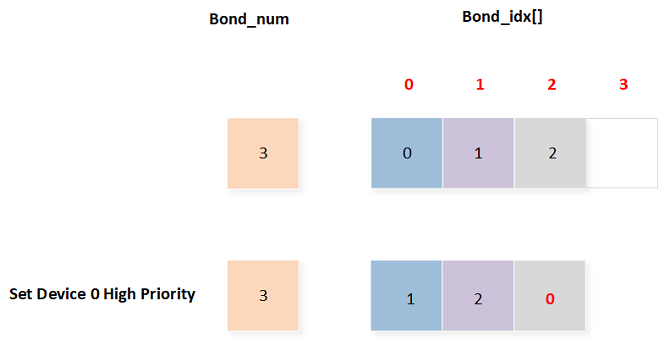
将一个绑定设备设为最高优先级
获取最高优先级设备
最高优先级设备为
bond_idx[bond_num - 1]。GAP LE API：
le_get_high_priority_bond()。
{kind=link}
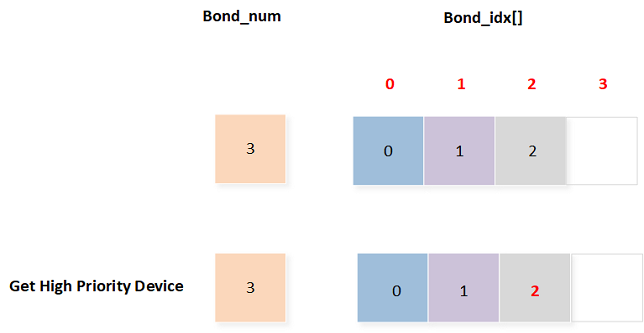
获取最高优先级设备
获取最低优先级设备
最低优先级设备为
bond_idx[0]。GAP LE API：
le_get_low_priority_bond()
{kind=link}
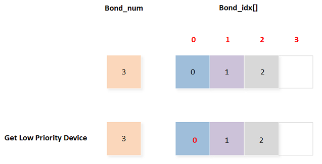
获取最低优先级设备
优先级管理示例如图所示：
{kind=link}
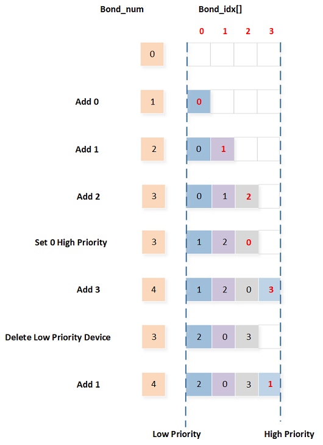
优先级管理示例
Bluetooth LE 密钥存储
Bluetooth LE 密钥信息存储在 LE key storage space。
LE key storage space 可以分为以下两部分：
LE bond priority：LE 优先级控制模块，更多信息参见 绑定设备优先级管理。
Bonded device keys storage block：设备索引 0、索引 1 等等。
LE REMOTE BD：保存对端设备地址。
LE LOCAL LTK：保存本地设备 LTK。
LE REMOTE LTK：保存对端设备 LTK。
LE REMOTE IRK：保存对端设备 IRK。
LE LOCAL CSRK：保存本地设备 CSRK。
LE REMOTE CSRK：保存对端设备 CSRK。
LE CCCD DATA：保存 CCCD 数据。
LE LOCAL BD：保存本地设备地址，RTL87x2E/RTL87x2H/RTL87x2G 设备支持存储，且需要将
le_local_addr_storage_flag配置为 1，打开后可以支持存储本地设备使用不同的 local address 与同一 remote device 配对生成的不同绑定信息。
配置
LE key storage space 的大小与以下两个参数有关：
LE Maximum Bonded Device Number：默认值为 1。可以通过 MP Tool 或者调用
gap_config_max_le_paired_device()接口来配置。更多信息请参阅章节 配置 和 API 的参数配置。Maximum CCCD Number：默认值为 16，可以通过 MP Tool 或者调用
gap_config_ccc_bits_count()接口来配置。更多信息请参阅章节 配置 和 API 的参数配置。
LE Key Entry 结构体
GAP 层使用结构体 T_LE_KEY_ENTRY 管理绑定设备。
#define LE_KEY_STORE_REMOTE_BD_BIT 0x01
#define LE_KEY_STORE_LOCAL_LTK_BIT 0x02
#define LE_KEY_STORE_REMOTE_LTK_BIT 0x04
#define LE_KEY_STORE_REMOTE_IRK_BIT 0x08
#define LE_KEY_STORE_LOCAL_CSRK_BIT 0x10
#define LE_KEY_STORE_REMOTE_CSRK_BIT 0x20
#define LE_KEY_STORE_CCCD_DATA_BIT 0x40
#define LE_KEY_STORE_LOCAL_IRK_BIT 0x80
#define LE_KEY_STORE_REMOTE_CLIENT_SUPPORTED_FEATURES_BIT 0x0100
#define LE_KEY_STORE_LOCAL_BD_BIT 0x8000
/** @brief LE key entry */
typedef struct
{
bool is_used;
uint8_t idx;
uint16_t flags;
uint8_t local_bd_type;
uint8_t app_data;
uint8_t reserved[2];
T_LE_REMOTE_BD remote_bd;
T_LE_REMOTE_BD resolved_remote_bd;
uint8_t local_bd_addr[6];
} T_LE_KEY_ENTRY;
参数说明：
is_used: 是否使用。idx: 设备索引，GAP 使用idx查找绑定设备信息在 FTL 的存储位置。flags: LE Key Storage Bits，表示密钥是否存在的位域。local_bd_type: 配对过程中使用的 local address type，T_GAP_LOCAL_ADDR_TYPE。remote_bd: 对端设备地址。resolved_remote_bd: 对端设备的 identity address。local_bd_addr: 本地设备地址。
LE 密钥管理
当本地设备与对端设备配对或本地设备与绑定设备加密时，GAP 层将发送 GAP_MSG_LE_AUTHEN_STATE_CHANGE 消息向 APP 通知 authentication 状态的变化。
void app_handle_authen_state_evt(uint8_t conn_id, uint8_t new_state, uint16_t cause)
{
APP_PRINT_INFO2("app_handle_authen_state_evt: conn_id %d, cause 0x%x", conn_id, cause);
switch (new_state)
{
case GAP_AUTHEN_STATE_STARTED:
{
APP_PRINT_INFO0("app_handle_authen_state_evt: GAP_AUTHEN_STATE_STARTED");
}
break;
case GAP_AUTHEN_STATE_COMPLETE:
{
if (cause == GAP_SUCCESS)
{
APP_PRINT_INFO0("app_handle_authen_state_evt: GAP_AUTHEN_STATE_COMPLETE pair success");
}
else
{
APP_PRINT_INFO0("app_handle_authen_state_evt: GAP_AUTHEN_STATE_COMPLETE pair failed");
}
}
break;
......
}
GAP_MSG_LE_BOND_MODIFY_INFO 用于向 APP 通知绑定信息已变更。
typedef struct
{
T_LE_BOND_MODIFY_TYPE type;
T_LE_KEY_ENTRY *p_entry;
} T_LE_BOND_MODIFY_INFO;
T_APP_RESULT app_gap_callback(uint8_t cb_type, void *p_cb_data)
{
T_APP_RESULT result = APP_RESULT_SUCCESS;
T_LE_CB_DATA *p_data = (T_LE_CB_DATA *)p_cb_data;
switch (cb_type)
{
case GAP_MSG_LE_BOND_MODIFY_INFO:
APP_PRINT_INFO1("GAP_MSG_LE_BOND_MODIFY_INFO: type 0x%x",
p_data->p_le_bond_modify_info->type);
break;
......
}
}
绑定信息变更类型的定义如下：
typedef enum
{
LE_BOND_DELETE,
LE_BOND_ADD,
LE_BOND_CLEAR,
LE_BOND_FULL,
LE_BOND_KEY_MISSING,
} T_LE_BOND_MODIFY_TYPE;
LE_BOND_DELETE：绑定信息已被删除，当满足以下条件时会发送该消息：密钥存储空间已满，因此最低优先级的绑定信息会被删除。
LE_BOND_ADD：新增绑定设备，仅在第一次与对端设备配对时发送该消息。LE_BOND_CLEAR：所有绑定消息已被删除，在调用le_bond_clear_all_keys()后会发送该消息。LE_BOND_FULL：密钥存储空间已满：当参数
GAP_PARAM_BOND_KEY_MANAGER设为true时发送该消息。此时，GAP 层不会自动删除绑定信息。设为
false时不会发送该消息，GAP 层将删除最低优先级的绑定信息，存储当前的绑定信息，然后发送LE_BOND_DELETE消息。
LE_BOND_KEY_MISSING：链路加密失败且密钥失效，当参数GAP_PARAM_BOND_KEY_MANAGER设为true时发送该消息。此时，GAP 层不会自动删除绑定信息。设为false时不会发送该消息，GAP 层将删除绑定信息，发送LE_BOND_DELETE消息。
GAP 层内部 LE 设备优先级管理
与新设备配对
密钥存储空间未满：GAP 层将在优先级控制模块添加绑定设备，发送
LE_BOND_ADD消息给 APP。该新增设备具有最高优先级。密钥存储空间已满：当
GAP_PARAM_BOND_KEY_MANAGER为true时，GAP 层发送消息LE_BOND_FULL给 APP；当GAP_PARAM_BOND_KEY_MANAGER为false时，GAP 层将从优先级控制模块移除最低优先级的绑定设备，发送LE_BOND_DELETE消息。GAP 层将在优先级控制模块添加绑定设备，发送LE_BOND_ADD消息给 APP。该新增设备具有最高优先级。
与绑定设备加密成功
GAP 层将该绑定设备设为最高优先级。
与绑定设备加密失败
当
GAP_PARAM_BOND_KEY_MANAGER为true时，GAP 层将发送LE_BOND_KEY_MISSING给 APP。当
GAP_PARAM_BOND_KEY_MANAGER为false时，GAP 层将从优先级控制模块移除该绑定设备，发送LE_BOND_DELETE给 APP。
APIs
完整的 API 请参考 gap_storage_le.h 及 gap_bond_le.h , 以下仅展示部分常用 API：
/* gap_storage_le.h */
T_LE_KEY_ENTRY *le_find_key_entry(uint8_t *bd_addr, T_GAP_REMOTE_ADDR_TYPE bd_type);
T_LE_KEY_ENTRY *le_find_key_entry_v2(uint8_t *remote_bd_addr, T_GAP_REMOTE_ADDR_TYPE remote_bd_type,
uint8_t *local_bd_addr, uint8_t local_bd_type);
T_LE_KEY_ENTRY *le_find_key_entry_by_idx(uint8_t idx);
uint8_t le_get_bond_dev_num(void);
T_LE_KEY_ENTRY *le_get_low_priority_bond(void);
T_LE_KEY_ENTRY *le_get_high_priority_bond(void);
bool le_set_high_priority_bond(uint8_t *bd_addr, T_GAP_REMOTE_ADDR_TYPE bd_type);
bool le_set_high_priority_bond_v2(T_LE_KEY_ENTRY *p_entry);
bool le_resolve_random_address(uint8_t *unresolved_addr, uint8_t *resolved_addr,
T_GAP_IDENT_ADDR_TYPE *resolved_addr_type);
bool le_gen_bond_dev(uint8_t *bd_addr, T_GAP_REMOTE_ADDR_TYPE bd_type,
T_GAP_LOCAL_ADDR_TYPE local_bd_type);
/* gap_bond_le.h */
void le_bond_clear_all_keys(void);
T_GAP_CAUSE le_bond_delete_by_idx(uint8_t idx);
T_GAP_CAUSE le_bond_delete_by_bd(uint8_t *bd_addr, T_GAP_REMOTE_ADDR_TYPE bd_type);
LE 地址
本章节的目的是概述 LE 地址。 设备通过设备地址进行识别。所有 LE 设备都应具有 LE 地址，以将设备唯一标识给另一 LE 设备。
地址类型
设备是使用 device address 来识别的。device address 可能是 public device address 或 random device address。
random device address 有以下两种子类型：
Static address
Private address
private address 有以下两种子类型：
Non-resolvable private address
Resolvable private address
Static Address
static address 的格式如下所示。
{kind=link}
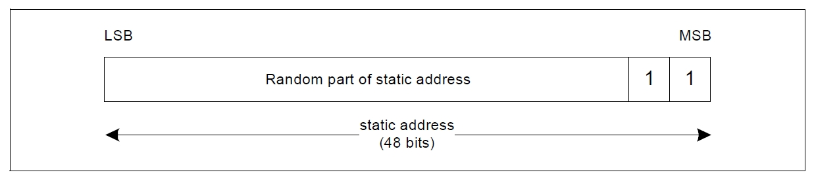
static address 的格式
Non-resolvable Private Address
non-resolvable private address 的格式如下所示。
{kind=link}
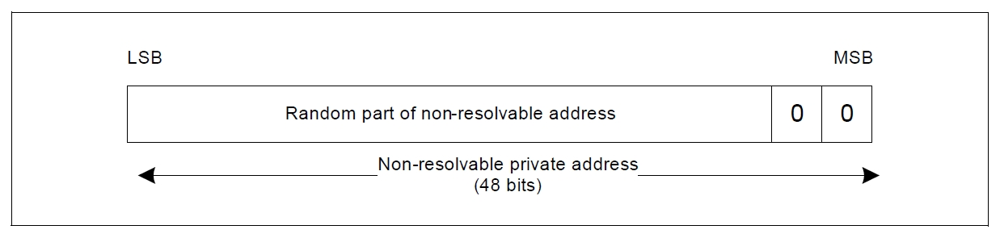
non-resolvable private address 的格式
Resolvable Private Address
resolvable private address 的格式如下所示。
{kind=link}
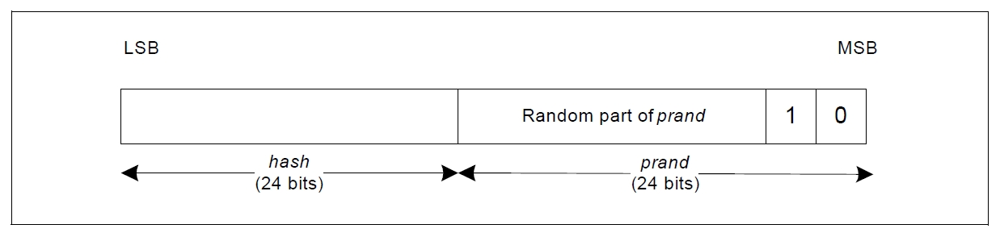
resolvable private address 的格式
设备的 identity address 是设备在发送的数据包中使用的 Public Device Address 或 Random Static Device Address。若设备使用 Resolvable Private Address，该设备必须有一个 identity address。 为了生成一个 resolvable private address，设备一定要有本地 IRK 或对端 IRK。resolvable private address 必须由 IRK 和随机生成的 24-bit 数生成。 resolvable private address 可以被相应设备的 IRK 解析。若 resolvable private address 已被解析，设备可以关联该地址与对端设备。
备注
如果设备的静态地址发生更改，那么存储在对端设备中的地址将变得无效，并且无法使用旧地址重新连接。
IRK 和 Identity Address
SM 使用密钥分发方法，以在无线通信中实现身份认证和加密功能。IRK 是用于生成和解析 resolvable private address 的 128 位密钥。若 Central 已收到 Peripheral 的 IRK，那么 Central 可以解析 Peripheral 的 resolvable private address。若 Peripheral 已收到 Central 的 IRK，那么 Peripheral 可以解析 Central 的 resolvable private address。privacy 概念仅防范未被分发 IRK 的设备。
Identity information 用于分发 IRK。全为零的 Identity Resolving Key 数据字段表示设备没有有效的 resolvable private address。
identity address information 用于分发 public device address 或 static random address。
下图展示 Central 和 Peripheral 分发所有密钥和值的示例。

Transport Specific Key Distribution
Resolving List 和 Resolution
Resolving List 和 Filter Accept List
通过增加和删除 device identity，Host 维护一个 resolving list。一个 device identity 由对端设备的 identity address 以及本地设备和对端设备的 IRK 对组成。
当 Controller 执行 address resolution，若 Host 的操作涉及 resolving list 中的一个对端设备，那么 Host 使用对端设备的 identity address。同样地，倘若对端的设备地址已被解析，所有从 Controller 送往 Host 的 event 将使用对端的 device identity。
在 Controller 中执行 address resolution 时，可以实现设备过滤。因为在检查设备是否存在于 Filter Accept List 之前，对端的 device identity address 可以被解析出来。
下图展示 Controller resolving list 和 Controller Filter Accept List 之间关系的逻辑表示。
{kind=link}
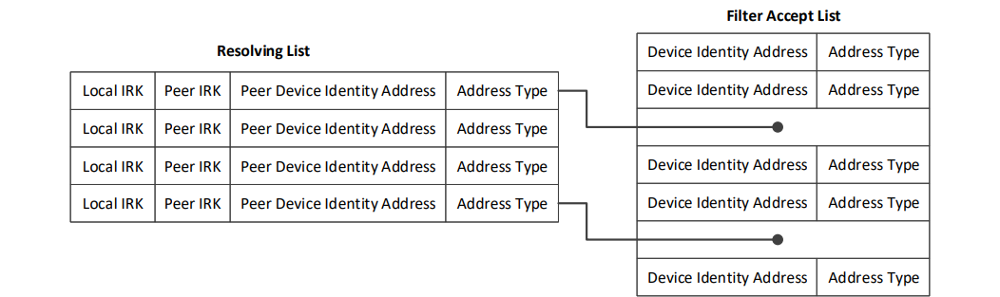
Resolving List 和 Device Filter Accept List 的逻辑表示
一旦 resolvable private address 被解析出来，Host 设置的 Filter Accept List 和 filter policies 应用于相应的 identity address。
Address Resolution
若 Controller 中的 address resolution 已启用，当 Controller 收到本地或对端的 resolvable private address，Controller 将使用 resolving list。
除了以下场景，其它时间均可启用 address resolution。
已启用 advertising (不包括 periodic advertising)
已启用 scanning
正在创建连线
当 Controller 中的 address resolution 已启用，从 Host 至 Controller，涉及 resolving list 中对端设备的操作，Host 必须使用对端设备的 identity address。同样地，倘若对端的设备地址已被解析，所有从 Controller 送往 Host 的 event 将使用对端的 device identity。
Bluetooth LE Privacy 的示例代码位于 LE Peripheral Privacy 示例工程中。
GATT Profile Server
Profile-Server：基于 GATT 的 Profile 在 server 端的实现的公共接口。
概述
Server 是可以接收来自 client 的 command 和 request 且发送 response、indication 和 notification 给 client 的设备。GATT Profile 定义作为 GATT server 和 GATT client 的 LE 设备的交互方式。Profile 可能包含一个或多个 GATT services，service 是一组 characteristics 的集合，因而 GATT server 展示的是其 characteristics。
用户可以使用 Profile Server 导出的 APIs 实现 specific service。Profile server 层级如图-Profile Server 层级。Profile 包括 profile server layer 和 specific service。位于 protocol stack 之上的 profile server layer 封装供 specific service 访问 protocol stack 的接口，因此针对 specific service 的开发不涉及 protocol stack 的细节，使开发变得更简单和清晰。基于 profile server layer 的 specific service 是由 application layer 实现的，specific service 由 attribute value 组成并提供接口供 APP 发送数据。
{kind=link}
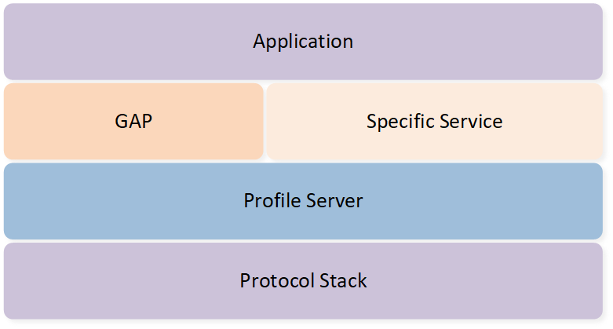
Profile Server 层级
Profile Server 交互
Profile server layer 处理与 protocol stack layer 的交互，并提供接口用于设计 specific service。Profile Server 交互包括向 server 添加 service、读取 characteristic value、写入 characteristic value、characteristic value notification 和 characteristic value indication。
添加 Service
Protocol stack 维护通过 profile server layer 添加的所有 services 的信息。首先，需要通过 server_init() 接口初始化 service attribute table 的总数目。
void app_le_profile_init(void)
{
server_init(2);
simp_srv_id = simp_ble_service_add_service(app_profile_callback);
bas_srv_id = bas_add_service(app_profile_callback);
server_register_app_cb(app_profile_callback);
......
}
Profile server layer 提供 server_add_service() 接口用于向 profile server layer 添加 service。
T_SERVER_ID simp_ble_service_add_service(void *p_func)
{
if (false == server_add_service(&simp_service_id,
(uint8_t *)simple_ble_service_tbl,
sizeof(simple_ble_service_tbl),
simp_ble_service_cbs))
{
APP_PRINT_ERROR0("simp_ble_service_add_service: fail");
simp_service_id = 0xff;
return simp_service_id;
}
pfn_simp_ble_service_cb = (P_FUN_SERVER_GENERAL_CB)p_func;
return simp_service_id;
}
下图表示一个 server 包含多个 service tables，向该 server 添加 service 的情况。
{kind=link}
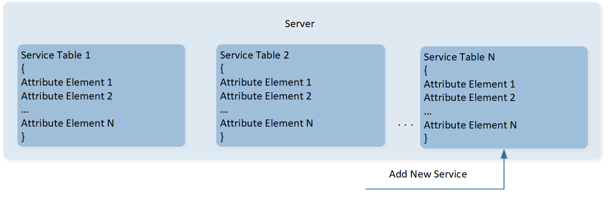
向 Server 添加 Services
当 service 添加到 profile server layer 后，GAP 初始化流程会注册所有 services，一旦完成注册流程，GAP 层会发送 PROFILE_EVT_SRV_REG_COMPLETE 消息。
注册 service 的流程如图-注册 Service 的流程 所示。
{kind=link}
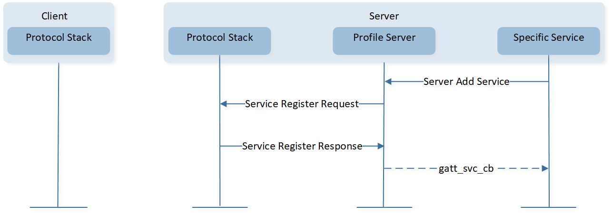
注册 Service 的流程
在 GAP 初始化过程中，通过向 protocol stack 发送 service 注册请求以启动 service 注册流程，然后注册所有已添加 services。若 server 通用回调函数不为 NULL，一旦最后一个服务被成功注册，profile server
layer 将通过注册的回调函数 app_profile_callback() 向 APP 发送 PROFILE_EVT_SRV_REG_COMPLETE 消息。
T_APP_RESULT app_profile_callback(T_SERVER_ID service_id, void *p_data)
{
T_APP_RESULT app_result = APP_RESULT_SUCCESS;
if (service_id == SERVICE_PROFILE_GENERAL_ID)
{
T_SERVER_APP_CB_DATA *p_param = (T_SERVER_APP_CB_DATA *)p_data;
switch (p_param->eventId)
{
case PROFILE_EVT_SRV_REG_COMPLETE:// srv register result event.
APP_PRINT_INFO1("PROFILE_EVT_SRV_REG_COMPLETE: result %d",
p_param->event_data.service_reg_result);
break;
......
}
Service的回调函数
Server通用回调函数
Server通用回调函数用于向APP发送事件，其中包含service注册完成事件和通过characteristic value
notification或indication发送数据完成事件。通过 server_register_app_cb() 初始化该回调函数。在 profile_server.h 中定义server通用回调函数。
Specific Service回调函数
为访问由specific service提供的attribute value，需要在specific service中实现回调函数，该回调函数用于处理来自client的read/write attribute vlaue和更新CCCD数值的流程。通过 server_add_service() 初始化该回调函数。在 profile_server.h 中定义回调函数的结构体。
/** @brief GATT service callbacks */
typedef struct
{
P_FUN_GATT_READ_ATTR_CB read_attr_cb; /**< Read callback function pointer.
Return value: @ref T_APP_RESULT. */
P_FUN_GATT_WRITE_ATTR_CB write_attr_cb; /**< Write callback function pointer.
Return value: @ref T_APP_RESULT. */
P_FUN_GATT_CCCD_UPDATE_CB cccd_update_cb; /**< Update cccd callback function pointer. */
} T_FUN_GATT_SERVICE_CBS;
read_attr_cb读 attribute 回调函数，当 client 发送 attribute read request 时，该回调函数用于获取 specific service 提供的 attribute value。
write_attr_cb写 attribute 回调函数，当 client 发送 attribute write request 时，该回调函数用于写入 specific service 提供的 attribute value。
cccd_update_cb更新 CCCD 数值回调函数，用于通知 specific service，service 中相应 CCCD 数值已被 client 写入。
const T_FUN_GATT_SERVICE_CBS simp_ble_service_cbs =
{
simp_ble_service_attr_read_cb, // Read callback function pointer
simp_ble_service_attr_write_cb, // Write callback function pointer
simp_ble_service_cccd_update_cb // CCCD update callback function pointer
};
Write Indication Post Procedure 回调函数
Write indication post procedure 回调函数用于在处理 client 的 write request 之后执行一些后续流程。该回调函数是在 write attribute 回调函数中被初始化的。若无后续流程需要执行，write
attribute 回调函数中的 p_write_post_proc 指针必须为 NULL。在 profile_server.h 中定义 write indication post procedure 回调函数。
Characteristic Value Read
该流程用于从 server 读取 characteristic value。有四个子流程可以用于读取 characteristic value，包括 read characteristic value、read using characteristic UUID、read long characteristic values 和 read multiple characteristic values。一个可读的 attribute 必须配置可读 permission。根据不同的 attribute flag，可以从 service 或 APP 读取 attribute value。
由 Attribute Element 提供 Attribute Value
flag 为 ATTRIB_FLAG_VALUE_INCL 的 attribute 会涉及该流程。
{
ATTRIB_FLAG_VALUE_INCL, /* flags */
{ /* type_value */
LO_WORD(0x2A04),
HI_WORD(0x2A04),
100,
200,
0,
LO_WORD(2000),
HI_WORD(2000)
},
5,/* bValueLen */
NULL,
GATT_PERM_READ /* permissions */
}
该流程中各层之间的交互如图-读 Characteristic Value--由 Attribute Element 提供 Attribute Value 所示，protocol stack layer 将从 attribute element 中读取 attribute value，并直接在 read response 中响应该 attribute value。
{kind=link}
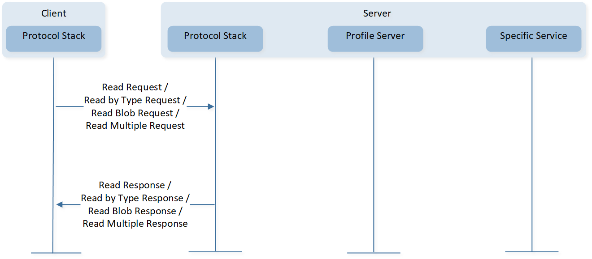
读 Characteristic Value--由 Attribute Element 提供 Attribute Value
由 APP 提供 Attribute Value 且结果未挂起
flag 为 ATTRIB_FLAG_VALUE_APPL 的 attribute 会涉及该流程。
{
ATTRIB_FLAG_VALUE_APPL, /* wFlags */
{ /* bTypeValue */
LO_WORD(GATT_UUID_CHAR_BLP_MEASUREMENT),
HI_WORD(GATT_UUID_CHAR_BLP_MEASUREMENT)
},
0, /* bValueLen */
NULL,
GATT_PERM_NONE /* wPermissions */
}
该流程中各层之间的交互如图-读Characteristic Value--由APP提供Attribute Value且结果未挂起 所示。当本地设备收到read request时，protocol stack将发送read indication给profile server layer，profile server layer将调用read attribute回调函数获取specific service中的attribute value。然后，profile server layer通过read confirmation将数据传递给protocol stack。
{kind=link}
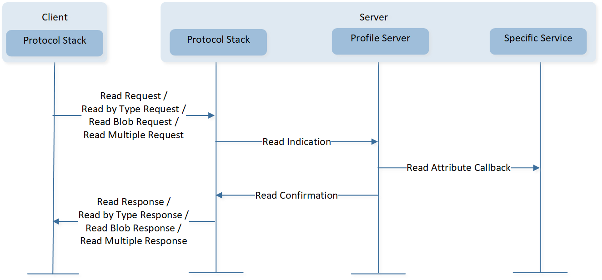
读Characteristic Value--由APP提供Attribute Value且结果未挂起
示例代码如下， app_profile_callback 的返回结果必须为 APP_RESULT_SUCCESS。
T_APP_RESULT app_profile_callback(T_SERVER_ID service_id, void *p_data)
{
T_APP_RESULT app_result = APP_RESULT_SUCCESS;
......
else if (service_id == simp_srv_id)
{
TSIMP_CALLBACK_DATA *p_simp_cb_data = (TSIMP_CALLBACK_DATA *)p_data;
switch (p_simp_cb_data->msg_type)
{
case SERVICE_CALLBACK_TYPE_READ_CHAR_VALUE:
{
if (p_simp_cb_data->msg_data.read_value_index == SIMP_READ_V1)
{
uint8_t value[2] = {0x01, 0x02};
APP_PRINT_INFO0("SIMP_READ_V1");
simp_ble_service_set_parameter(SIMPLE_BLE_SERVICE_PARAM_V1_READ_CHAR_VAL, 2, &value);
}
}
break;
}
......
return app_result;
}
由APP提供Attribute Value且结果挂起
flag为 ATTRIB_FLAG_VALUE_APPL 的attribute会涉及该流程。
由于 APP 提供的 attribute value 不能立即被读取，specific service 需要调用 server_attr_read_confirm() 传递 attribute value。该流程中各层之间的交互如图-读 Characteristic Value--由 APP 提供 Attribute Value 且结果挂起 所示。

读 Characteristic Value--由 APP 提供 Attribute Value 且结果挂起
示例代码如下， app_profile_callback 的返回结果必须为 APP_RESULT_PENDING。
T_APP_RESULT app_profile_callback(T_SERVER_ID service_id, void *p_data)
{
T_APP_RESULT app_result = APP_RESULT_PENDING;
......
else if (service_id == simp_srv_id)
{
TSIMP_CALLBACK_DATA *p_simp_cb_data = (TSIMP_CALLBACK_DATA *)p_data;
switch (p_simp_cb_data->msg_type)
{
case SERVICE_CALLBACK_TYPE_READ_CHAR_VALUE:
{
if (p_simp_cb_data->msg_data.read_value_index == SIMP_READ_V1)
{
uint8_t value[2] = {0x01, 0x02};
APP_PRINT_INFO0("SIMP_READ_V1");
simp_ble_service_set_parameter(SIMPLE_BLE_SERVICE_PARAM_V1_READ_CHAR_VAL, 2, &value);
}
}
break;
}
......
return app_result;
}
Characteristic Value Write
该流程用于向 server 写入 characteristic value。有四个子流程可以用于写入 characteristic value，包括 write without response、signed write without response、write characteristic value 和 write long characteristic values。
Write Characteristic Value
由 Attribute Element 提供 Attribute Value
flag 为
ATTRIB_FLAG_VOID的 attribute 会涉及该流程。uint8_t cha_val_v8_011[1] = {0x08}; const T_ATTRIB_APPL gatt_dfindme_profile[] = { ...... /* handle = 0x000e Characteristic value -- Value V8 */ { ATTRIB_FLAG_VOID, /* flags */ { /* type_value */ LO_WORD(0xB008), HI_WORD(0xB008), }, 1, /* bValueLen */ (void *)cha_val_v8_011, GATT_PERM_READ | GATT_PERM_WRITE /* permissions */ } ...... }
该流程中各层之间的交互如图所示，write request 用于请求 server 写 attribute value，且在写操作结束之后直接发送 write response。
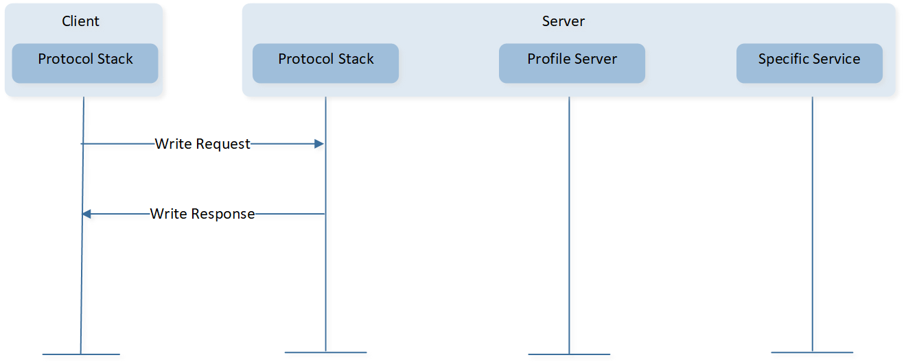
Write Characteristic Value--由 Attribute Element 提供 Attribute Value
由 APP 提供 Attribute Value 且结果未挂起
flag 为
ATTRIB_FLAG_VALUE_APPL的 attribute 会涉及该流程。该流程中各层之间的交互如图-Write Characteristic Value--由 APP 提供 Attribute Value 且结果未挂起 所示，当本地设备收到 write request，protocol stack 将发送 write request indication 给 profile server layer，profile server layer 将调用 write attribute callback 写入 specific service 中的 attribute value。Profile server layer 将通过 write request confirmation 返回写入结果。
若在 profile server layer 返回 write confirmation 之后 server 需要执行后续流程，回调函数指针
write_ind_post_proc不为 NULL 时，将调用该回调函数。
Write Characteristic Value--由 APP 提供 Attribute Value 且结果未挂起
由
server_add_service()注册的srv_cbs回调函数通知 APP，write_type为WRITE_REQUEST。示例代码如下，app_profile_callback的返回结果必须为APP_RESULT_SUCCESS。T_APP_RESULT app_profile_callback(T_SERVER_ID service_id, void *p_data) { T_APP_RESULT app_result = APP_RESULT_SUCCESS; ...... else if (service_id == simp_srv_id) { TSIMP_CALLBACK_DATA *p_simp_cb_data = (TSIMP_CALLBACK_DATA *)p_data; switch (p_simp_cb_data->msg_type) { case SERVICE_CALLBACK_TYPE_WRITE_CHAR_VALUE: { switch (p_simp_cb_data->msg_data.write.opcode) { case SIMP_WRITE_V2: { APP_PRINT_INFO2("SIMP_WRITE_V2: write type %d, len %d", p_simp_cb_data->msg_data.write.write_type, p_simp_cb_data->msg_data.write.len); } ...... return app_result; }
由 APP 提供 Attribute Value 且结果挂起
flag 为
ATTRIB_FLAG_VALUE_APPL的 attribute 会涉及该流程。若写 attribute value 流程不能立即结束，specific service 将会调用
server_attr_write_confirm()。该流程中各层之间的交互如图所示。Write indication post procedure 为可选流程。
Write Characteristic Value--由 APP 提供 Attribute Value 且结果挂起
由
server_add_service()注册的srv_cbs回调函数通知 APP，write_type为WRITE_REQUEST。示例代码如下，app_profile_callback的返回结果必须为APP_RESULT_PENDING。T_APP_RESULT app_profile_callback(T_SERVER_ID service_id, void *p_data) { T_APP_RESULT app_result = APP_RESULT_PENDING; ...... else if (service_id == simp_srv_id) { TSIMP_CALLBACK_DATA *p_simp_cb_data = (TSIMP_CALLBACK_DATA *)p_data; switch (p_simp_cb_data->msg_type) { case SERVICE_CALLBACK_TYPE_WRITE_CHAR_VALUE: { switch (p_simp_cb_data->msg_data.write.opcode) { case SIMP_WRITE_V2: { APP_PRINT_INFO2("SIMP_WRITE_V2: write type %d, len %d", p_simp_cb_data->msg_data.write.write_type, p_simp_cb_data->msg_data.write.len); } ...... return app_result; }
写 CCCD 值
若本地设备收到 client 的 write request 以写 CCCD，protocol stack 将更新 CCCD 信息，profile server layer 通过更新 CCCD 回调函数向 APP 通知 CCCD 信息已更新。该流程中各层之间的交互如图-Write Characteristic Value--写 CCCD 值 所示。
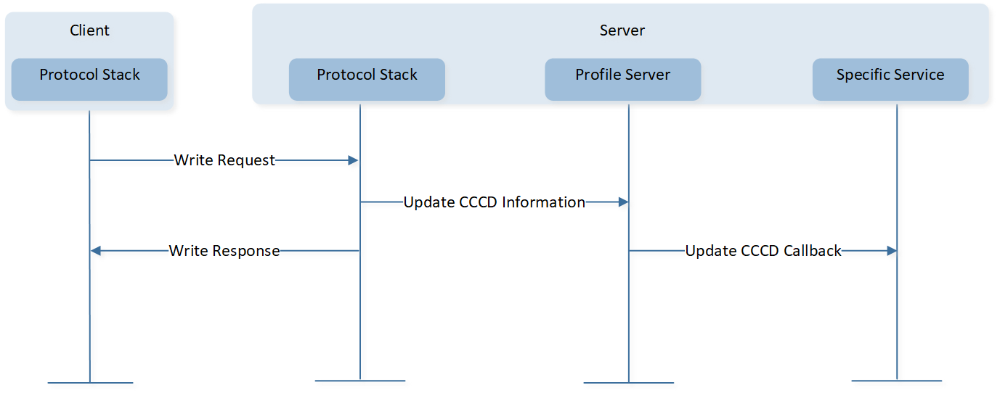
Write Characteristic Value--写 CCCD 值
void simp_ble_service_cccd_update_cb(uint8_t conn_id, T_SERVER_ID service_id, uint16_t index, uint16_t cccbits) { TSIMP_CALLBACK_DATA callback_data; bool is_handled = false; callback_data.conn_id = conn_id; callback_data.msg_type = SERVICE_CALLBACK_TYPE_INDIFICATION_NOTIFICATION; APP_PRINT_INFO2("simp_ble_service_cccd_update_cb: index = %d, cccbits 0x%x", index, cccbits); switch (index) { case SIMPLE_BLE_SERVICE_CHAR_NOTIFY_CCCD_INDEX: { if (cccbits & GATT_CLIENT_CHAR_CONFIG_NOTIFY) { // Enable Notification callback_data.msg_data.notification_indification_index = SIMP_NOTIFY_INDICATE_V3_ENABLE; } else { // Disable Notification callback_data.msg_data.notification_indification_index = SIMP_NOTIFY_INDICATE_V3_DISABLE; } is_handled = true; } break; case SIMPLE_BLE_SERVICE_CHAR_INDICATE_CCCD_INDEX: { if (cccbits & GATT_CLIENT_CHAR_CONFIG_INDICATE) { // Enable Indication callback_data.msg_data.notification_indification_index = SIMP_NOTIFY_INDICATE_V4_ENABLE; } else { // Disable Indication callback_data.msg_data.notification_indification_index = SIMP_NOTIFY_INDICATE_V4_DISABLE; } is_handled = true; } break; default: break; } /* Notify APP. */ if (pfn_simp_ble_service_cb && (is_handled == true)) { pfn_simp_ble_service_cb(service_id, (void *)&callback_data); } }
由
server_add_service()注册的srv_cbs回调函数通知 APP，msg_type为SERVICE_CALLBACK_TYPE_INDIFICATION_NOTIFICATION。T_APP_RESULT app_profile_callback(T_SERVER_ID service_id, void *p_data) { T_APP_RESULT app_result = APP_RESULT_SUCCESS; ...... else if (service_id == simp_srv_id) { TSIMP_CALLBACK_DATA *p_simp_cb_data = (TSIMP_CALLBACK_DATA *)p_data; switch (p_simp_cb_data->msg_type) { case SERVICE_CALLBACK_TYPE_INDIFICATION_NOTIFICATION: { switch (p_simp_cb_data->msg_data.notification_indification_index) { case SIMP_NOTIFY_INDICATE_V3_ENABLE: { APP_PRINT_INFO0("SIMP_NOTIFY_INDICATE_V3_ENABLE"); } break; case SIMP_NOTIFY_INDICATE_V3_DISABLE: { APP_PRINT_INFO0("SIMP_NOTIFY_INDICATE_V3_DISABLE"); } break; case SIMP_NOTIFY_INDICATE_V4_ENABLE: { APP_PRINT_INFO0("SIMP_NOTIFY_INDICATE_V4_ENABLE"); } break; case SIMP_NOTIFY_INDICATE_V4_DISABLE: { APP_PRINT_INFO0("SIMP_NOTIFY_INDICATE_V4_DISABLE"); } break; default: break; } } break; ...... return app_result; }
{kind=link}
{kind=link}
Write without Response/Signed Write without Response
Write without Response/Signed Write without Response 和 write characteristic value 流程的区别在于 server 不会发送写入结果给 client。
由 APP 提供 Attribute Value
flag 为 ATTRIB_FLAG_VALUE_APPL 的 attribute 会涉及该流程。
该流程中各层之间的交互如图-Write without Response/Signed Write without Response--由 APP 提供 Attribute Value 所示。当本地设备收到 write command 或 signed write command，由 server_add_service() 注册的回调函数 write_attr_cb() 将会被调用。
由 server_add_service() 注册的 srv_cbs 回调函数将会通知 APP， write_type 为 WRITE_WITHOUT_RESPONSE 或 WRITE_SIGNED_WITHOUT_RESPONSE。

Write without Response/Signed Write without Response--由 APP 提供 Attribute Value
Write Long Characteristic Values
Prepare Write
若 characteristic value 的长度大于 write request 支持的 characteristic value 的最大长度(
ATT_MTU-3)，client 将使用 prepare write request。需要被写入的值将先存储在 profile server layer，然后 profile server layer 将处理 prepare write request indication，并返回 prepare write confirmation。该流程中各层之间的交互如图所示。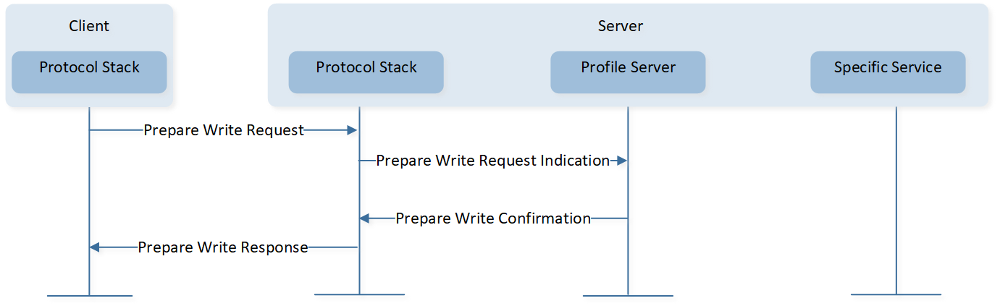
Write Long Characteristic Value--Prepare Write 流程
结果未挂起的 Execute Write
在发送 prepare write request 之后，execute write request 用于完成写入 attribute value 的流程。由
server_add_service()注册的srv_cbs回调函数通知 APP，write_type为WRITE_LONG。Write indication post procedure 为可选流程。该流程中各层之间的交互如图所示。
Write Long Characteristic Values--结果未挂起的 Execute Write
结果挂起的 Execute Write
若写入操作不能立即完成，specific service 将调用
server_exec_write_confirm()。Write indication post procedure 为可选流程。该流程中各层之间的交互如图所示。
Write Long Characteristic Values--结果挂起的 Execute Write
{kind=link}
Characteristic Value Notification
Server 用该流程通知 client 一个 characteristic value。Server 主动调用 server_send_data() 发送数据，在发送流程完成之后，会通过 server 通用回调函数通知 APP。该流程中各层之间的交互如图所示。
{kind=link}
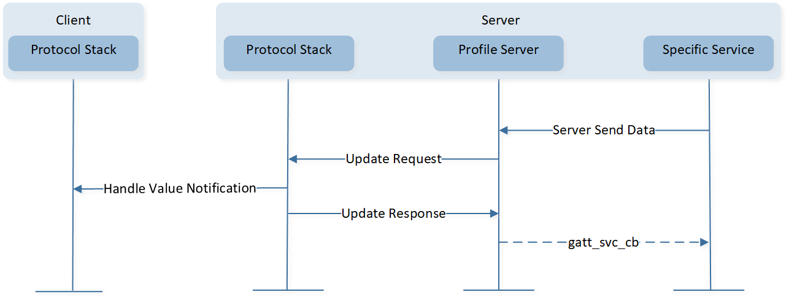
Characteristic Value Notification
bool simp_ble_service_send_v3_notify(uint8_t conn_id, T_SERVER_ID service_id, void *p_value,
uint16_t length)
{
APP_PRINT_INFO0("simp_ble_service_send_v3_notify");
// send notification to client
return server_send_data(conn_id, service_id, SIMPLE_BLE_SERVICE_CHAR_V3_NOTIFY_INDEX, p_value,
length,
GATT_PDU_TYPE_ANY);
}
由于通知不需要响应，因此通知在 ATT 层中没有任何流控制。然而，由于资源的限制，Bluetooth Host 对通知进行了流控制。
通知的流控制通过在 GAP 层维护的 credits 值来实现，这允许 APP 在不等待 Bluetooth Host 响应的情况下，以 credits 的数量发送通知。Bluetooth Host 可以缓存 credits 数量的通知数据。
当配置文件服务器层向 Bluetooth Host 发送通知时，credit 计数值减一。
当配置文件服务器层从 Bluetooth Host 接收到响应时，credit 计数值加一。当通知被发送到空中时，Bluetooth Host 将向配置文件服务器层发送一个响应。
只有当 credit 计数值大于零时，才能发送通知。
如果 APP 想要向 Bluetooth Host 发送多个数据，首先，APP 可以调用 le_get_gap_param() 来获取 credit。
如果 credit 大于 0，这意味着 Bluetooth Host 仍然有缓存数据的缓冲区，APP 可以向 Bluetooth Host 发送数据。如果 credit 为 0，这意味着 Bluetooth Host 不再有缓存数据的缓冲区，需要等待缓冲区释放后再发送通知。
void test(void)
{
/*get remaining credit*/
uint8_t credit;
le_get_gap_param(GAP_PARAM_LE_REMAIN_CREDITS, &credit);
/*If multiple data need to be sent*/
while (credit > 0)
{
......
/*If credit > 0, the Bluetooth Host still has buffer cache data, and the APP can send data to the Bluetooth Host*/
if (server_send_data(conn_id, service_id, attr_idx,
data, data_length, GATT_PDU_TYPE_NOTIFICATION))
{
credit--;
}
}
/*If credit is 0, it means that the Bluetooth Host has no more buffer cache data,
and the Notification needs to wait for the buffer to be released before sending it.*/
}
通知数据成功发送后，服务回调函数可以获知当前的 credit 值。
T_APP_RESULT app_xxx_service_callback(T_SERVER_ID service_id, void *p_data)
{
......
if (service_id == SERVICE_PROFILE_GENERAL_ID)
{
......
switch (p_param->eventId)
{
......
case PROFILE_EVT_SEND_DATA_COMPLETE:
APP_PRINT_INFO5("app_xxx_service_callback: PROFILE_EVT_SEND_DATA_COMPLETE conn_id %d, cause 0x%x, service_id %d, attrib_idx 0x%x, credits %d",
p_param->event_data.send_data_result.conn_id,
p_param->event_data.send_data_result.cause,
p_param->event_data.send_data_result.service_id,
p_param->event_data.send_data_result.attrib_idx,
p_param->event_data.send_data_result.credits);
if (p_param->event_data.send_data_result.cause == GAP_SUCCESS)
{
APP_PRINT_INFO0("app_xxx_service_callback: PROFILE_EVT_SEND_DATA_COMPLETE success");
uint8_t credit = p_param->event_data.send_data_result.credits;
/*Buffer has been freed, if more data still needs to be sent*/
while (credit > 0)
{
......
if (server_send_data(conn_id, service_id, attr_idx,
data, data_length, GATT_PDU_TYPE_NOTIFICATION))
{
credit--;
}
}
}
else
{
APP_PRINT_ERROR0("app_xxx_service_callback: PROFILE_EVT_SEND_DATA_COMPLETE failed");
}
break;
}
}
}
Characteristic Value Indication
Server 用该流程给 client indicate 一个 characteristic value。一旦收到 indication，client 必须用 confirmation 响应。在 server 收到 handle value confirmation 之后，会通过 server 通用回调函数通知 APP。该流程中各层之间的交互如图所示。
{kind=link}
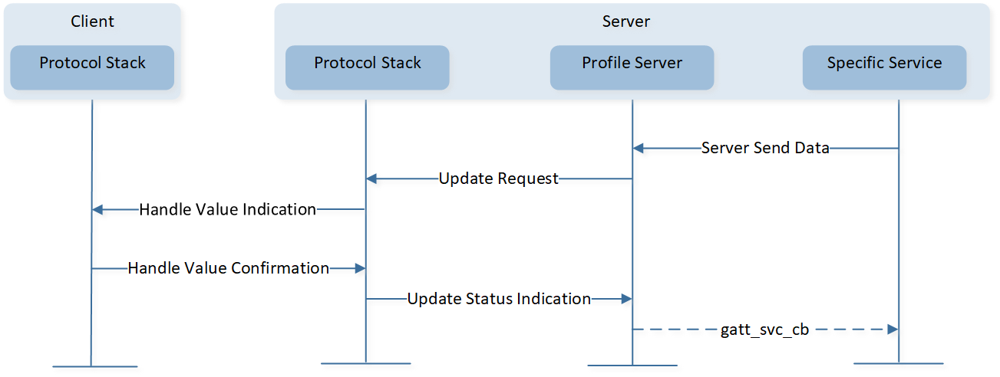
Characteristic Value Indication
小心
和 notification 不同，indication 是需要对端响应的。从 server 端发送的 indication 应遵循 sequential indication-confirmation protocol。在接收到 client 端的 confirmation PDU 之前，该 server 不应在同一个 ATT bearer 上向同一个 client 发送其他的 indication。
bool simp_ble_service_send_v4_indicate(uint8_t conn_id, T_SERVER_ID service_id, void *p_value,
uint16_t length)
{
APP_PRINT_INFO0("simp_ble_service_send_v4_indicate");
// send indication to client
return server_send_data(conn_id, service_id, SIMPLE_BLE_SERVICE_CHAR_V4_INDICATE_INDEX, p_value,
length, GATT_PDU_TYPE_ANY);
}
在收到 handle value confirmation 后，将调用 app_profile_callback()。
T_APP_RESULT app_profile_callback(T_SERVER_ID service_id, void *p_data)
{
T_APP_RESULT app_result = APP_RESULT_SUCCESS;
if (service_id == SERVICE_PROFILE_GENERAL_ID)
{
T_SERVER_APP_CB_DATA *p_param = (T_SERVER_APP_CB_DATA *)p_data;
switch (p_param->eventId)
{
......
case PROFILE_EVT_SEND_DATA_COMPLETE:
APP_PRINT_INFO5("PROFILE_EVT_SEND_DATA_COMPLETE: conn_id %d, cause 0x%x, service_id %d, attrib_idx 0x%x, credits %d",
p_param->event_data.send_data_result.conn_id,
p_param->event_data.send_data_result.cause,
p_param->event_data.send_data_result.service_id,
p_param->event_data.send_data_result.attrib_idx,
p_param->event_data.send_data_result.credits);
if (p_param->event_data.send_data_result.cause == GAP_SUCCESS)
{
APP_PRINT_INFO0("PROFILE_EVT_SEND_DATA_COMPLETE success");
}
else
{
APP_PRINT_ERROR0("PROFILE_EVT_SEND_DATA_COMPLETE failed");
}
break;
default:
break;
}
}
}
Specific Service 的实现
为实现一个用例，一个 Profile 需要包含一个或多个 services，而 service 由 characteristics 组成，每个 characteristic 包括必选的 characteristic value 和可选的 characteristic descriptor。因而，service、characteristic 以及 characteristic 的组成成分（例如，值和 descriptors）包含 Profile 数据，并存储于 server 的 attributes 中。
以下为开发 specific service 的步骤：
定义 Service 和 Profile Spec。
定义 Service Attribute Table。
定义 Service 与 APP 之间的接口。
定义
xxx_add_service，xxx_set_parameter，xxx_notify，xxx_indicate等 API。用
T_FUN_GATT_SERVICE_CBS实现回调函数xxx_ble_service_cbs。
本节内容以 simple LE service 为例，简单介绍如何实现 specific service。具体细节参见 simple_ble_service.c 和 simple_ble_service.h 中的源代码。
定义 Service 和 Profile Spec
为实现 specific service，必须定义 service 和 profile spec。
定义 Service Attribute Table
由 attribute elements 组成的 service 通过 service table 定义，一个 service table 可以由多个 services 组成。
Attribute Element
Attribute Element 是 service 的基本单元，其结构体定义在 gatt.h 中。
typedef struct
{
uint16_t flags; /**< Attribute flags @ref GATT_ATTRIBUTE_FLAG */
uint8_t type_value[2 + 14]; /**< 16 bit UUID + included value or 128 bit UUID */
uint16_t value_len; /**< Length of value */
void *p_value_context; /**< Pointer to value if @ref ATTRIB_FLAG_VALUE_INCL
and @ref ATTRIB_FLAG_VALUE_APPL not set */
uint32_t permissions; /**< Attribute permission @ref GATT_ATTRIBUTE_PERMISSIONS */
} T_ATTRIB_APPL;
Flags
Flags 的可选值和描述见表-Flags 的可选值和描述。
Flags 的可选值和描述 Option Values
Description
Used only for primary service declaration attributes if GATT over LE is supported.
Attribute value is neither supplied by APP nor included following 16-bit UUID.
Attribute value is pointed by
p_value_contextandvalue_lenshall be set to the length of attribute value.Attribute value is included following 16-bit UUID.
APP has to supply attribute value.
Attribute uses 128-bit UUID.
Attribute value is ASCII_Z string.
APP will be informed if CCCD value is changed.
APP will be informed about CCCD value when CCCD is written by client, no matter it is changed or not.
参数说明：
ATTRIB_FLAG_LE: 仅适用于 type 为 primary service declaration 的 attribute，表示 primary service 允许通过 LE 链路访问。ATTRIB_FLAG_VOID,ATTRIB_FLAG_VALUE_INCL,ATTRIB_FLAG_VALUE_APPL: 三者之一必须在 attribute element 中使用。ATTRIB_FLAG_VALUE_INCL: 表示 attribute value 被置于type_value的最后 14 字节（type_value的前 2 个字节用于保存 UUID），且value_len是放入最后 14 字节区域的字节数目。由于type_value提供 attribute value，p_value_context指针为 NULL。ATTRIB_FLAG_VALUE_APPL: 表示由 APP 提供 attribute value。只要协议栈涉及对该 attribute value 的操作，协议栈将与 APP 进行交互以完成相应处理流程。由于 attribute value 是由 APP 提供的，type_value仅保存 UUID，value_len为 0，且p_value_context指针为 NULL。ATTRIB_FLAG_VOID: 表示 attribute value 既不放置于type_value的最后 14 个字节，也不由 APP 提供。此时，type_value仅保存 UUID，p_value_context指针指向 attribute value，value_len表示 attribute value 的长度。
表-Flags Value 的选择模式 展示 flags value 与 read attribute 流程使用的 actual value 之间的关联。
Flags Value 的选择模式 APPL
APPL|SCII_Z
INCL
INCL|ASCII_Z
VOID
VOID|ASCII_Z
If Set
value_lenAny (NULL)
Any (NULL)
Strlen (Value)
Strlen (Value)
Strlen (Value)
Strlen (Value)
type_value+2Any (NULL)
Any (NULL)
Value
Value
Any (NULL)
Any (NULL)
p_value_contextAny (NULL)
Any (NULL)
Any (NULL)
Any (NULL)
Value
Value
Actual Get by Read Attribute Process
Actual Length
Reply by APP
Reply by APP
Strlen (Value)
Strlen (Value)+1
Strlen (Value)
Strlen (Value)+1
Actual Value
Reply by APP
Reply by APP
Value
Value+
\0Value
Value+
\0备注
APPL:
ATTRIB_FLAG_VALUE_APPLVOID:
ATTRIB_FLAG_VOIDINCL:
ATTRIB_FLAG_VALUE_INCLASCII_Z:
ATTRIB_FLAG_ASCII_Z
Permissions
Attribute 的 Permissions 指定 read 或 write 访问需要的安全级别，同样包括 notification 或 indication。Permissions 的值表示该 attribute 的 permission。Attribute permissions 是 access permissions、encryption permissions、authentication permissions 和 authorization permissions 的组合，其可用值如表-Permissions 的可用值 所示。
Permissions 的可用值 Types
Permissions
Read Permissions
Write Permissions
Notify/Indicate Permissions
Service Table
Service 包含一组 attributes，其被称之为 service table。一个 service table 包含各种类型的 attributes，例如 service declaration、characteristic declaration、characteristic value 和 characteristic descriptor declaration。
Service table 的示例如表-Service Table 示例 所示，在 LE Peripheral 工程的 simple_ble_service.c 中实现。
Flags |
Attribute Type |
Attribute Value |
Permission |
|---|---|---|---|
INCL | LE |
Primary Service Declaration |
UUID (0xA00A) |
Read |
INCL |
Characteristic Declaration |
Property (Read) |
Read |
APPL |
Characteristic Value |
UUID (0xB001), value not defined here. |
Read |
VOID | ASCII_Z |
Characteristic User Description |
UUID (0x2901), value defined in |
Read |
INCL |
Characteristic Declaration |
Property (Write|Write without response) |
Read |
APPL |
Characteristic Value |
UUID (0xB002), value not defined here. |
Write |
INCL |
Characteristic Declaration |
Property (Notify) |
Read |
APPL |
Characteristic Value |
UUID (0xB003), value not defined here. |
None |
CCCD_APPL |
Client Characteristic Configuration Descriptor |
Default CCCD value |
Read|Write |
INCL |
Characteristic Declaration |
Property (Indicate) |
Read |
APPL |
Characteristic Value |
UUID (0xB004), value not defined here. |
None |
CCCD_APPL |
Client Characteristic Configuration Descriptor |
Default CCCD value |
Read|Write |
备注
LE 为
ATTRIB_FLAG_LE的缩写。INCL 为
ATTRIB_FLAG_VALUE_INCL的缩写。APPL 为
ATTRIB_FLAG_VALUE_APPL的缩写。
Service table 的示例代码如下:
/**< @brief profile/service definition. */
const T_ATTRIB_APPL simple_ble_service_tbl[] =
{
/* <<Primary Service>>, .. */
{
(ATTRIB_FLAG_VALUE_INCL | ATTRIB_FLAG_LE), /* flags */
{ /* type_value */
LO_WORD(GATT_UUID_PRIMARY_SERVICE),
HI_WORD(GATT_UUID_PRIMARY_SERVICE),
LO_WORD(GATT_UUID_SIMPLE_PROFILE), /* service UUID */
HI_WORD(GATT_UUID_SIMPLE_PROFILE)
},
UUID_16BIT_SIZE, /* bValueLen */
NULL, /* p_value_context */
GATT_PERM_READ /* permissions */
},
/* <<Characteristic>> demo for read */
{
ATTRIB_FLAG_VALUE_INCL, /* flags */
{ /* type_value */
LO_WORD(GATT_UUID_CHARACTERISTIC),
HI_WORD(GATT_UUID_CHARACTERISTIC),
GATT_CHAR_PROP_READ /* characteristic properties */
/* characteristic UUID not needed here, is UUID of next attrib. */
},
1, /* bValueLen */
NULL,
GATT_PERM_READ /* permissions */
},
{
ATTRIB_FLAG_VALUE_APPL, /* flags */
{ /* type_value */
LO_WORD(GATT_UUID_CHAR_SIMPLE_V1_READ),
HI_WORD(GATT_UUID_CHAR_SIMPLE_V1_READ)
},
0, /* bValueLen */
NULL,
#if SIMP_SRV_AUTHEN_EN
GATT_PERM_READ_AUTHEN_REQ /* permissions */
#else
GATT_PERM_READ /* permissions */
#endif
},
{
ATTRIB_FLAG_VOID | ATTRIB_FLAG_ASCII_Z, /* flags */
{ /* type_value */
LO_WORD(GATT_UUID_CHAR_USER_DESCR),
HI_WORD(GATT_UUID_CHAR_USER_DESCR),
},
(sizeof(v1_user_descr) - 1), /* bValueLen */
(void *)v1_user_descr,
GATT_PERM_READ /* permissions */
},
/* <<Characteristic>> demo for write */
{
ATTRIB_FLAG_VALUE_INCL, /* flags */
{ /* type_value */
LO_WORD(GATT_UUID_CHARACTERISTIC),
HI_WORD(GATT_UUID_CHARACTERISTIC),
(GATT_CHAR_PROP_WRITE | GATT_CHAR_PROP_WRITE_NO_RSP) /* characteristic properties */
/* characteristic UUID not needed here, is UUID of next attrib. */
},
1, /* bValueLen */
NULL,
GATT_PERM_READ /* permissions */
},
{
ATTRIB_FLAG_VALUE_APPL, /* flags */
{ /* type_value */
LO_WORD(GATT_UUID_CHAR_SIMPLE_V2_WRITE),
HI_WORD(GATT_UUID_CHAR_SIMPLE_V2_WRITE)
},
0, /* bValueLen */
NULL,
#if SIMP_SRV_AUTHEN_EN
GATT_PERM_WRITE_AUTHEN_REQ /* permissions */
#else
GATT_PERM_WRITE /* permissions */
#endif
},
/* <<Characteristic>>, demo for notify */
{
ATTRIB_FLAG_VALUE_INCL, /* flags */
{ /* type_value */
LO_WORD(GATT_UUID_CHARACTERISTIC),
HI_WORD(GATT_UUID_CHARACTERISTIC),
(GATT_CHAR_PROP_NOTIFY) /* characteristic properties */
/* characteristic UUID not needed here, is UUID of next attrib. */
},
1, /* bValueLen */
NULL,
GATT_PERM_READ /* permissions */
},
{
ATTRIB_FLAG_VALUE_APPL, /* flags */
{ /* type_value */
LO_WORD(GATT_UUID_CHAR_SIMPLE_V3_NOTIFY),
HI_WORD(GATT_UUID_CHAR_SIMPLE_V3_NOTIFY)
},
0, /* bValueLen */
NULL,
GATT_PERM_NONE /* permissions */
},
/* client characteristic configuration */
{
ATTRIB_FLAG_VALUE_INCL | ATTRIB_FLAG_CCCD_APPL, /* flags */
{ /* type_value */
LO_WORD(GATT_UUID_CHAR_CLIENT_CONFIG),
HI_WORD(GATT_UUID_CHAR_CLIENT_CONFIG),
/* NOTE: this value has an instantiation for each client, a write to */
/* this attribute does not modify this default value: */
LO_WORD(GATT_CLIENT_CHAR_CONFIG_DEFAULT), /* client char. config. bit field */
HI_WORD(GATT_CLIENT_CHAR_CONFIG_DEFAULT)
},
2, /* bValueLen */
NULL,
#if SIMP_SRV_AUTHEN_EN
(GATT_PERM_READ_AUTHEN_REQ | GATT_PERM_WRITE_AUTHEN_REQ) /* permissions */
#else
(GATT_PERM_READ | GATT_PERM_WRITE) /* permissions */
#endif
},
/* <<Characteristic>> demo for indicate */
{
ATTRIB_FLAG_VALUE_INCL, /* flags */
{ /* type_value */
LO_WORD(GATT_UUID_CHARACTERISTIC),
HI_WORD(GATT_UUID_CHARACTERISTIC),
(GATT_CHAR_PROP_INDICATE) /* characteristic properties */
/* characteristic UUID not needed here, is UUID of next attrib. */
},
1, /* bValueLen */
NULL,
GATT_PERM_READ /* permissions */
},
{
ATTRIB_FLAG_VALUE_APPL, /* flags */
{ /* type_value */
LO_WORD(GATT_UUID_CHAR_SIMPLE_V4_INDICATE),
HI_WORD(GATT_UUID_CHAR_SIMPLE_V4_INDICATE)
},
0, /* bValueLen */
NULL,
GATT_PERM_NONE /* permissions */
},
/* client characteristic configuration */
{
ATTRIB_FLAG_VALUE_INCL | ATTRIB_FLAG_CCCD_APPL, /* flags */
{ /* type_value */
LO_WORD(GATT_UUID_CHAR_CLIENT_CONFIG),
HI_WORD(GATT_UUID_CHAR_CLIENT_CONFIG),
/* NOTE: this value has an instantiation for each client, a write to */
/* this attribute does not modify this default value: */
LO_WORD(GATT_CLIENT_CHAR_CONFIG_DEFAULT), /* client char. config. bit field */
HI_WORD(GATT_CLIENT_CHAR_CONFIG_DEFAULT)
},
2, /* bValueLen */
NULL,
#if SIMP_SRV_AUTHEN_EN
(GATT_PERM_READ_AUTHEN_REQ | GATT_PERM_WRITE_AUTHEN_REQ) /* permissions */
#else
(GATT_PERM_READ | GATT_PERM_WRITE) /* permissions */
#endif
},
};
定义 Service 与 APP 之间的接口
当 service 的 attribute value 被读取或写入时，将通过 APP 注册的回调函数通知 APP。以 simple LE service 为例，定义类型为 TSIMP_CALLBACK_DATA 的数据结构以保存需要通知的结果。
typedef struct
{
uint8_t conn_id;
T_SERVICE_CALLBACK_TYPE msg_type;
TSIMP_UPSTREAM_MSG_DATA msg_data;
} TSIMP_CALLBACK_DATA;
msg_type表示操作类型是读操作、写操作或更新 CCCD 操作。typedef enum { SERVICE_CALLBACK_TYPE_INDIFICATION_NOTIFICATION = 1, /**< CCCD update event */ SERVICE_CALLBACK_TYPE_READ_CHAR_VALUE = 2, /**< client read event */ SERVICE_CALLBACK_TYPE_WRITE_CHAR_VALUE = 3, /**< client write event */ } T_SERVICE_CALLBACK_TYPE;
msg_data保存读操作、写操作或更新 CCCD 操作的数据。
定义 xxx_add_service(), xxx_set_parameter(), xxx_notify(), xxx_indicate() 等 API
xxx_add_service用于向 profile server layer 添加 service table，注册针对 attribute 的读操作、写操作或更新 CCCD 操作的回调函数。
xxx_set_parameter用于供 APP 设置 service 相关数据。
xxx_notify用于发送 notification 数据。
xxx_indicate用于发送 indication 数据。
用 T_FUN_GATT_SERVICE_CBS 实现回调函数 xxx_ble_service_cbs
xxx_ble_service_cbs 用于处理 client 的读操作、写操作或更新 CCCD 操作。
const T_FUN_GATT_SERVICE_CBS simp_ble_service_cbs =
{
simp_ble_service_attr_read_cb, // Read callback function pointer
simp_ble_service_attr_write_cb, // Write callback function pointer
simp_ble_service_cccd_update_cb // CCCD update callback function pointer
};
在 xxx_ble_service_add_service 中调用 server_add_service() 以注册该回调函数。
T_SERVER_ID simp_ble_service_add_service(void *p_func)
{
if (false == server_add_service(&simp_service_id,
(uint8_t *)simple_ble_service_tbl,
sizeof(simple_ble_service_tbl),
simp_ble_service_cbs))
{
APP_PRINT_ERROR0("simp_ble_service_add_service: fail");
simp_service_id = 0xff;
return simp_service_id;
}
pfn_simp_ble_service_cb = (P_FUN_SERVER_GENERAL_CB)p_func;
return simp_service_id;
}
GATT Profile Client
Profile-Client: 基于 GATT 的 Profile 在 client 端的实现的公共接口。
概述
Profile 的 client 接口给开发者提供 discover services、接收和处理 indication 和 notification、给 GATT Server 发送 read/write request 的功能。
下图展示了 Profile client 层级。Profile 包括 profile client layer 和 specific profile client。位于 protocol stack 之上的 profile client layer 封装供 specific client 访问 protocol stack 的接口，因此针对 specific client 的开发不涉及 protocol stack 的细节，使开发变得更简单和清晰。基于 profile client layer 的 specific client 是由 application layer 实现的，其实现不同于 specific server 的实现。profile client 不涉及 attribute table，提供收集和获取信息的功能，而不是提供 service 和信息。

Profile Client 层级
Profile Client Layer
Profile Client Layer 处理与 protocol stack layer 的交互，提供接口用于设计 specific client。Client 将对 server 进行 discover services 和 discover characteristics、读取和写入 attribute、接收和处理 notifications 和 indications 相关操作。
Client 通用回调函数
Client 通用回调函数用于向 APP 发送 client_all_primary_srv_discovery() 的结果， client_id 为 CLIENT_PROFILE_GENERAL_ID。该回调函数由 client_register_general_client_cb() 初始化。
void app_le_profile_init(void)
{
client_init(3);
......
client_register_general_client_cb(app_client_callback);
}
static T_USER_CMD_PARSE_RESULT cmd_srvdis(T_USER_CMD_PARSED_VALUE *p_parse_value)
{
uint8_t conn_id = p_parse_value->dw_param[0];
T_GAP_CAUSE cause;
cause = client_all_primary_srv_discovery(conn_id, CLIENT_PROFILE_GENERAL_ID);
return (T_USER_CMD_PARSE_RESULT)cause;
}
T_APP_RESULT app_client_callback(T_CLIENT_ID client_id, uint8_t conn_id, void *p_data)
{
T_APP_RESULT result = APP_RESULT_SUCCESS;
APP_PRINT_INFO2("app_client_callback: client_id %d, conn_id %d",
client_id, conn_id);
if (client_id == CLIENT_PROFILE_GENERAL_ID)
{
T_CLIENT_APP_CB_DATA *p_client_app_cb_data = (T_CLIENT_APP_CB_DATA *)p_data;
switch (p_client_app_cb_data->cb_type)
{
case CLIENT_APP_CB_TYPE_DISC_STATE:
......
}
}
}
若 APP 不使用 client_id 为 CLIENT_PROFILE_GENERAL_ID 的 client_all_primary_srv_discovery()，APP 不需要注册该通用回调函数。
Specific Client 回调函数
添加 Client
Protocol client layer 维护所有添加的 specific clients 的信息。首先，初始化需要添加的 client table 的总数目，profile client layer 提供 client_init() 接口用于初始化 client table 数目。
Protocol client layer 提供 client_register_spec_client_cb() 接口以注册 specific client 回调函数。图 向 Profile Client Layer 添加 Specific Clients 展示 client layer 包含多个 specific client tables，添加 specific client 的情况。

向 Profile Client Layer 添加 Specific Clients
APP 向 profile client layer 添加 specific client 之后，APP 将记录每个已添加 specific client 对应返回的 client ID，以实现后续的数据交互流程。
回调函数
需要在 specific client 模块实现 specific client 回调函数，在 profile_client.h 中定义 specific client 回调函数数据结构。
typedef struct
{
P_FUN_DISCOVER_STATE_CB discover_state_cb; //!< Discovery state callback function pointer
P_FUN_DISCOVER_RESULT_CB discover_result_cb; //!< Discovery result callback function pointer
P_FUN_READ_RESULT_CB read_result_cb; //!< Read response callback function pointer
P_FUN_WRITE_RESULT_CB write_result_cb; //!< Write result callback function pointer
P_FUN_NOTIFY_IND_RESULT_CB notify_ind_result_cb;//!< Notify Indication callback function pointer
P_FUN_DISCONNECT_CB disconnect_cb; //!< Disconnection callback function pointer
} T_FUN_CLIENT_CBS;
参数说明：
discover_state_cb: discovery 状态回调函数，用于向 specific client 模块通知client_xxx_discovery的 discover 状态。discover_result_cb: discovery 结果回调函数，用于向 specific client 模块通知client_xxx_discovery的 discover 结果。read_result_cb: read 结果回调函数，用于向 specific client 模块通知client_attr_read()或client_attr_read_using_uuid()的读取结果。write_result_cb: write 结果回调函数，用于向 specific client 模块通知client_attr_write()的写入结果。notify_ind_result_cb: notification 或 indication 回调函数，用于向 specific client 模块通知收到来自 server 的 notification 或 indication 数据。disconnect_cb: disconnection 回调函数，用于向 specific client 模块通知一条 LE 链路已断开。
Discovery 流程
若本地设备不保存 server 的 handle 信息，那么在与 server 建立 connection 后，client 通常会执行 discovery 流程。Specific client 需要调用 client_xxx_discovery 启动 discovery 流程，然后 specific client 需要处理回调函数 discover_state_cb 中的 discovery 状态以及回调函数 discover_result_cb 中的 discovery 结果。
该流程中各层中间的交互如图所示。
{kind=link}
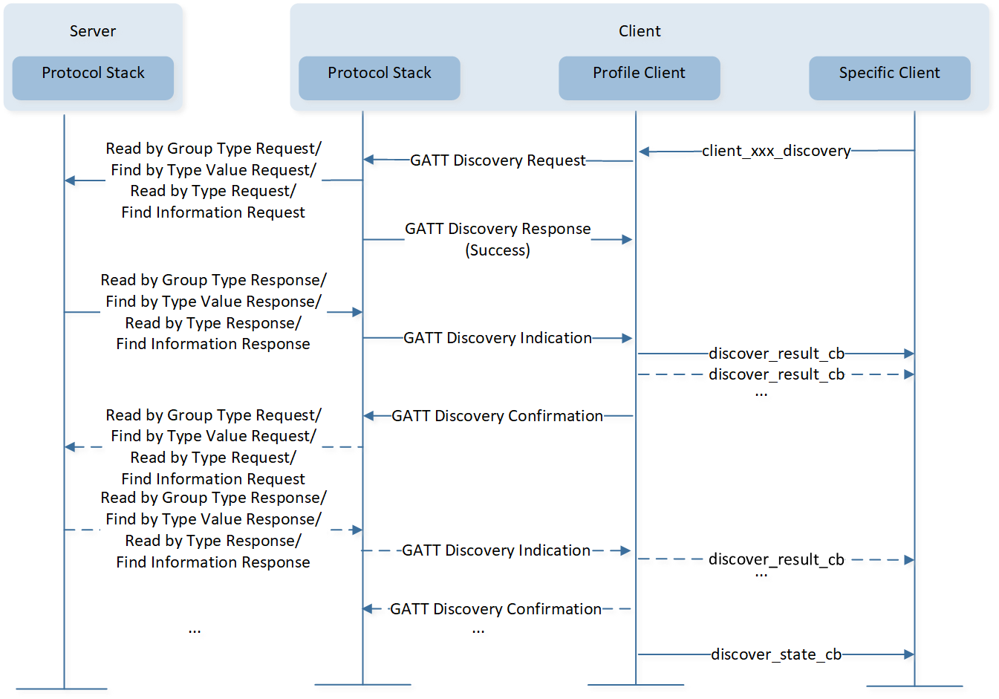
GATT Discovery 流程
Discovery 状态
Reference API |
|
|---|---|
Discovery 结果
Reference API |
||
|---|---|---|
|
||
|
||
|
||
|
||
|
||
|
||
|
||
|
||
|
||
|
||
|
Characteristic Value Read
该流程用于读取 server 的 characteristic value。在 profile client layer 有两个子流程可用于读取 characteristic value：Read Characteristic Value by Handle 和 Read Characteristic Value by UUID。
Read Characteristic Value by Handle
当 client 已知 Characteristic Value Handle 时，该流程可用于读取 server 的 characteristic value。Read Characteristic Value by Handle 流程包含三个阶段，Phase 2 为可选阶段。
Phase 1：调用
client_attr_read()以读取 characteristic value。Phase 2：可选阶段。若 characteristic value 的长度大于 (
ATT_MTU-1) 字节，Read Response 仅包含 characteristic value 的前 (ATT_MTU-1) 字节，之后则使用 Read Long Characteristic Value 流程读取 characteristic value。Phase 3：Profile client layer 调用
read_result_cb以返回读取结果。
该流程中各层之间的交互如图所示。

Read Characteristic Value by Handle 流程
Read Characteristic Value by UUID
当 client 仅已知 UUID 时，该流程可用于读取 server 的 characteristic value。Read Characteristic Value by UUID 流程包含三个阶段，Phase 2 为可选阶段（见 Read Characteristic Value by UUID 流程）。
Phase 1：调用
client_attr_read_using_uuid()以读取 characteristic value。Phase 2：可选阶段。若 characteristic value 的长度大于 (
ATT_MTU-4) 字节，Read by Type Response 仅包含 characteristic value 的前 (ATT_MTU-4) 字节，之后则使用 Read Long Characteristic Value 流程读取 characteristic value。Phase 3：Profile client layer 调用
read_result_cb以返回读取结果。
该流程中各层之间的交互如图-Read Characteristic Value by UUID 流程 所示。

Read Characteristic Value by UUID 流程
Characteristic Value Write
该流程用于写入 server 的 characteristic value。在 profile client layer 有四个子流程可用于写入 characteristic value：Write without Response、Signed Write without Response、Write Characteristic Value 和 Write Long Characteristic Values。
Write Characteristic Value
当 client 已知 Characteristic Value Handle 时，该流程可用于写入 server 的 characteristic value。当 characteristic value 的长度小于或等于(ATT_MTU-3)字节，将使用该流程。否则，将使用 Write Long Characteristic Values 流程。
该流程中各层之间的交互如图所示。

Write Characteristic Value 流程
Write Long Characteristic Values
当 client 已知 Characteristic Value Handle，且 characteristic value 的长度大于 (ATT_MTU-3) 字节时，该流程可用于写入 server 的 characteristic value。
该流程中各层之间的交互如图所示。

Write Long Characteristic Value 流程
Write Without Response
当 client 已知 Characteristic Value Handle，且 client 不需要写入操作成功执行的应答时，该流程可用于写入 server 的 characteristic value。characteristic value 的长度小于或等于 (ATT_MTU-3) 字节。
该流程中各层之间的交互如图所示。

Write Without Response 流程
Signed Write without Response
当 client 已知 Characteristic Value Handle，且 ATT Bearer 未加密时，该流程可用于写入 server 的 characteristic value。该流程仅适用于 Characteristic Properties 的 authenticated 位已使能，client 与 server 设备已绑定的情况。characteristic value 的长度小于或等于(ATT_MTU-15)字节。
该流程中各层之间的交互如图所示。
{kind=link}
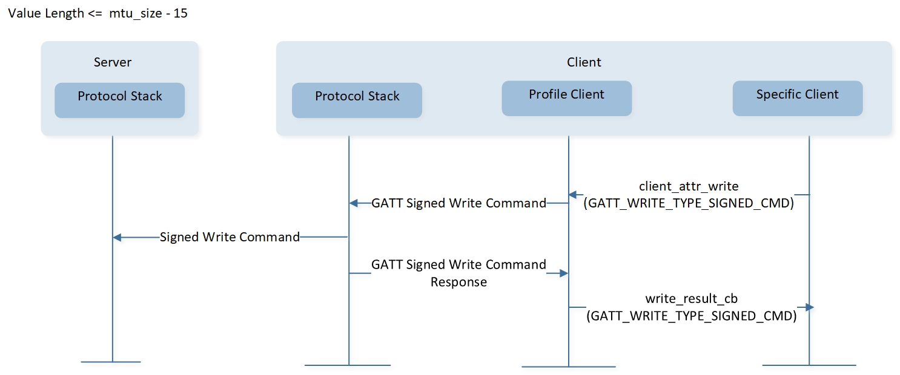
Signed Write without Response 流程
Characteristic Value Notification
该流程适用于 server 已被配置为向 client 通知 characteristic value，且不需要成功接收 notification 的应答的情况。
该流程中各层之间的交互如图所示。

Characteristic Value Notification 流程
profile client layer 未存储 service handle 信息，因此 profile client layer 无法确定发送该 notification 的 specific client。profile client layer 将调用所有注册的 specific clients 回调函数，因此 specific client 需要检查是否需要处理该 notification。示例代码如下：
static T_APP_RESULT bas_client_notify_ind_cb(uint8_t conn_id, bool notify, uint16_t handle,
uint16_t value_size, uint8_t *p_value)
{
T_APP_RESULT app_result = APP_RESULT_SUCCESS;
T_BAS_CLIENT_CB_DATA cb_data;
uint16_t *hdl_cache;
hdl_cache = bas_table[conn_id].hdl_cache;
cb_data.cb_type = BAS_CLIENT_CB_TYPE_NOTIF_IND_RESULT;
if (handle == hdl_cache[HDL_BAS_BATTERY_LEVEL])
{
cb_data.cb_content.notify_data.battery_level = *p_value;
}
else
{
return APP_RESULT_SUCCESS;
}
if (bas_client_cb)
{
app_result = (*bas_client_cb)(bas_client, conn_id, &cb_data);
}
return app_result;
}
Characteristic Value Indication
该流程适用于 server 已被配置为向 client 通知 characteristic value，且需要成功接收 indication 的应答的情况。
结果未挂起的 Characteristic Value Indication
回调函数
notify_ind_result_cb的返回结果不为APP_RESULT_PENDING。该流程中各层之间的交互如图所示。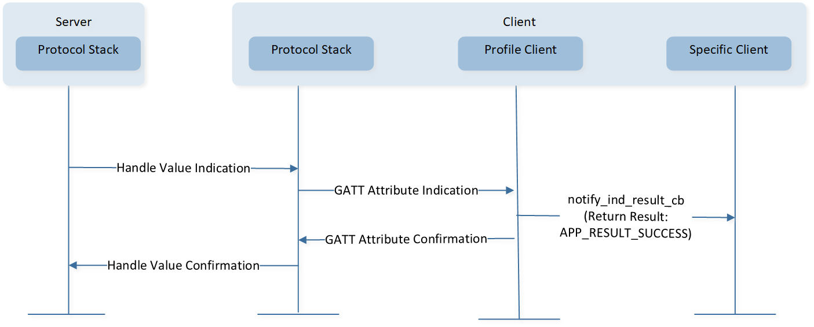
结果未挂起的Characteristic Value Indication流程
结果挂起的Characteristic Value Indication
回调函数
notify_ind_result_cb的返回结果为APP_RESULT_PENDING。APP 需要调用client_attr_ind_confirm()以发送 confirmation。该流程中各层之间的交互如图所示。
结果挂起的Characteristic Value Indication流程
profile client layer 未存储 service handle 信息，因此 profile client layer 无法确定发送该 indication 的 specific client。profile client layer 将调用所有注册的 specific clients 回调函数，因此 specific client 需要检查是否需要处理该 indication，示例代码如下:
static T_APP_RESULT simp_ble_client_notif_ind_result_cb(uint8_t conn_id, bool notify, uint16_t handle, uint16_t value_size, uint8_t *p_value) { T_APP_RESULT app_result = APP_RESULT_SUCCESS; T_SIMP_CLIENT_CB_DATA cb_data; uint16_t *hdl_cache; hdl_cache = simp_table[conn_id].hdl_cache; cb_data.cb_type = SIMP_CLIENT_CB_TYPE_NOTIF_IND_RESULT; if (handle == hdl_cache[HDL_SIMBLE_V3_NOTIFY]) { cb_data.cb_content.notif_ind_data.type = SIMP_V3_NOTIFY; cb_data.cb_content.notif_ind_data.data.value_size = value_size; cb_data.cb_content.notif_ind_data.data.p_value = p_value; } else if (handle == hdl_cache[HDL_SIMBLE_V4_INDICATE]) { cb_data.cb_content.notif_ind_data.type = SIMP_V4_INDICATE; cb_data.cb_content.notif_ind_data.data.value_size = value_size; cb_data.cb_content.notif_ind_data.data.p_value = p_value; } else { return app_result; } /* Inform APP the notif/ind result. */ if (simp_client_cb) { app_result = (*simp_client_cb)(simp_client, conn_id, &cb_data); } return app_result; }
{kind=link}
Sequential Protocol
Request-response Protocol
许多 ATT PDUs 是 sequential request-response protocol。一旦 client 向 server 发送 request，在收到该 server 发送的 response 之前，client 不能发送 request。Server 发送的 indication 使用 sequential indication-confirmation protocol。在接收到 confirmation PDU 之前，不得在同一 ATT bearer 上传输其他 indication 到相同 client。然而，client 可以在发送 confirmation 之前自由发送 command 和 request。
以下流程均是 sequential request-response protocol:
Discovery 流程
Read Characteristic Value By Handle 流程
Read Characteristic Value By UUID 流程
Write Characteristic Value 流程
Write Long Characteristic Values 流程
在当前流程完成之前，APP 不能启动其它流程。否则，其它流程会启动失败。
当建立 connection 成功后时，Bluetooth Host 可能会发送 exchange MTU request。GAP 层将发送 GAP_MSG_LE_CONN_MTU_INFO 消息以通知 APP，exchange MTU 流程已完成。在收到 GAP_MSG_LE_CONN_MTU_INFO 消息后，APP 可以启动以上流程。
void app_handle_conn_mtu_info_evt(uint8_t conn_id, uint16_t mtu_size)
{
APP_PRINT_INFO2("app_handle_conn_mtu_info_evt: conn_id %d, mtu_size %d", conn_id, mtu_size);
app_discov_services(conn_id, true);
}
Commands
在 ATT 中，不要求 response 的 command 没有流控机制。
Write Without Response
Signed Write Without Response
由于资源有限，Bluetooth Host 对 commands 采用流控机制。
在 GAP 层中维护 credits 数目实现对 Write Command 和 Signed Write Command 的流控，在收到 Bluetooth Host 的响应之前，允许 APP 发送 credits 笔 command。Bluetooth Host 能够缓存 credits 笔 command 的数据。
当 profile client layer 向 Bluetooth Host 发送 command 时，credits 数目减 1。
当 command 发送给 server 时，Bluetooth Host 会发送响应给 profile client layer，credits 数目加 1。
credits 数目大于 0 时，才可以发送 command。
回调函数 write_result_cb 可以通知当前的 credits 数目。APP 也可以将参数类型设为 GAP_PARAM_LE_REMAIN_CREDITS，调用 le_get_gap_param() 函数获取 credits 数目。
void test(void)
{
uint8_t wds_credits;
le_get_gap_param(GAP_PARAM_LE_REMAIN_CREDITS, &wds_credits);
}
用例
Bluetooth LE GAP 用例
本节介绍如何使用 LE GAP 接口，以下为一些典型用例。
本地设备 IRK 的设置
IRK 是用于生成和解析 RPA 的 128 位密钥。本地设备 IRK 的默认值为全零。
若设备支持 RPA 的生成且生成 RPA 作为其本地地址，在分发 IRK 时该设备必须发送包含有效 IRK 的 Identity Information。
若设备不支持生成 RPA 作为本地地址，在分发 IRK 时该设备发送包含 IRK 为全零的 Identity Information。此时，本地设备不会使用 RPA，APP 不需要设置 IRK。
GAP 层提供两种设置本地设备 IRK 的方法。
自动生成本地设备的 IRK
若 APP 希望使用该功能，那么 APP 需要将
GAP_PARAM_BOND_GEN_LOCAL_IRK_AUTO设为true。当 GAP 启动时，GAP 层会调用flash_load_local_irk()以载入本地设备 IRK。若载入失败，则会自动生成 IRK，然后调用flash_save_local_irk()保存本地设备 IRK。因此，使用自动生成本地设备 IRK 功能时，APP 不能使用flash_load_local_irk()和flash_save_local_irk()。void app_le_gap_init(void) { ...... uint8_t irk_auto = true; le_bond_set_param(GAP_PARAM_BOND_GEN_LOCAL_IRK_AUTO, sizeof(uint8_t), &irk_auto); }
APP 生成本地设备的 IRK
默认情况下，GAP 层会使用该方法，默认 IRK 为全零。APP 可以调用
le_bond_set_param()设置GAP_PARAM_BOND_SET_LOCAL_IRK以更改本地设备 IRK。void app_le_gap_init(void) { ...... T_LOCAL_IRK le_local_irk = {0, 1, 0, 5, 0, 0, 7, 0, 0, 0, 0, 0, 0, 0, 0, 9}; le_bond_set_param(GAP_PARAM_BOND_SET_LOCAL_IRK, GAP_KEY_LEN, le_local_irk.local_irk); }
该参数仅在 GAP 启动过程中是有效的，因此，APP 需要在调用
gap_start_bt_stack()之前设置GAP_PARAM_BOND_SET_LOCAL_IRK。APP 可以生成本地设备 IRK，并调用
flash_save_local_irk()保存 IRK。之后 APP 可以调用flash_load_local_irk()以载入本地设备 IRK，然后设置GAP_PARAM_BOND_SET_LOCAL_IRK以更改本地设备 IRK。
GAP Service Characteristic 的可写属性
示例代码位于 LE Scatternet 中。
GAP service 的 Device Name characteristic 和 Device Appearance characteristic 具有可选的可写属性，该可写属性默认是关闭的。APP 可以通过调用 gaps_set_parameter() 设置 GAPS_PARAM_APPEARANCE_PROPERTY 和 GAPS_PARAM_DEVICE_NAME_PROPERTY 来配置可写属性。
可写属性的配置
void app_le_gap_init(void) { uint8_t appearance_prop = GAPS_PROPERTY_WRITE_ENABLE; uint8_t device_name_prop = GAPS_PROPERTY_WRITE_ENABLE; T_LOCAL_APPEARANCE appearance_local; T_LOCAL_NAME local_device_name; if (flash_load_local_appearance(&appearance_local) == 0) { gaps_set_parameter(GAPS_PARAM_APPEARANCE, sizeof(uint16_t), &appearance_local.local_appearance); } if (flash_load_local_name(&local_device_name) == 0) { gaps_set_parameter(GAPS_PARAM_DEVICE_NAME, GAP_DEVICE_NAME_LEN, local_device_name.local_name); } gaps_set_parameter(GAPS_PARAM_APPEARANCE_PROPERTY, sizeof(appearance_prop), &appearance_prop); gaps_set_parameter(GAPS_PARAM_DEVICE_NAME_PROPERTY, sizeof(device_name_prop), &device_name_prop); gatt_register_callback(gap_service_callback); }
GAP Service 回调函数消息处理
APP 需要调用
gatt_register_callback()以注册回调函数，该回调函数用于处理 GAP service 消息。T_APP_RESULT gap_service_callback(T_SERVER_ID service_id, void *p_para) { T_APP_RESULT result = APP_RESULT_SUCCESS; T_GAPS_CALLBACK_DATA *p_gap_data = (T_GAPS_CALLBACK_DATA *)p_para; APP_PRINT_INFO2("gap_service_callback conn_id = %d msg_type = %d\n", p_gap_data->conn_id, p_gap_data->msg_type); if (p_gap_data->msg_type == SERVICE_CALLBACK_TYPE_WRITE_CHAR_VALUE) { switch (p_gap_data->msg_data.opcode) { case GAPS_WRITE_DEVICE_NAME: { T_LOCAL_NAME device_name; memcpy(device_name.local_name, p_gap_data->msg_data.p_value, p_gap_data->msg_data.len); device_name.local_name[p_gap_data->msg_data.len] = 0; flash_save_local_name(&device_name); } break; case GAPS_WRITE_APPEARANCE: { uint16_t appearance_val; T_LOCAL_APPEARANCE appearance; LE_ARRAY_TO_UINT16(appearance_val, p_gap_data->msg_data.p_value); appearance.local_appearance = appearance_val; flash_save_local_appearance(&appearance); } break; default: break; } } return result; }
APP 需要将 device name 和 device appearance 保存到 Flash ，具体内容参见 本地 Bluetooth Host 信息存储。
本地设备使用 Static Random Address
示例代码位于 LE Scatternet 中。
在 advertising、scanning 和 connection 时，默认使用的 local address type 是 public address，可以配置为 static random address。
Random address 的生成和存储
APP 第一次可以调用
le_gen_rand_addr()生成 static random address。然后将生成的地址存储到 Flash。如果 Flash 已经存储过 random 地址，则可以直接使用。然后调用le_set_gap_param()的GAP_PARAM_RANDOM_ADDR来设置 random address。注意le_set_gap_param()的GAP_PARAM_RANDOM_ADDR只有在初始化之前调用才有效，Stack ready 之后应该调用le_set_rand_addr()。设置 identity address
Stack 默认使用 public address 作为 identity address。APP 需要调用
le_cfg_local_identity_address()将 identity address 修改为 static random address。不正确的 identity address 设置会导致配对后无法重连。设置 local address type
Peripheral 角色或 Broadcaster 角色调用
le_adv_set_param()设置 local address type 以使用本地设备的 static random address。Central 角色或 Observer 角色调用le_scan_set_param()设置 local address type 以使用本地设备 static random address，示例代码如下：void app_le_gap_init(void) { ...... T_APP_STATIC_RANDOM_ADDR random_addr; bool gen_addr = true; uint8_t local_bd_type = GAP_LOCAL_ADDR_LE_RANDOM; if (app_load_static_random_address(&random_addr) == 0) { if (random_addr.is_exist == true) { gen_addr = false; } } if (gen_addr) { if (le_gen_rand_addr(GAP_RAND_ADDR_STATIC, random_addr.bd_addr) == GAP_CAUSE_SUCCESS) { random_addr.is_exist = true; app_save_static_random_address(&random_addr); } } le_cfg_local_identity_address(random_addr.bd_addr, GAP_IDENT_ADDR_RAND); le_set_gap_param(GAP_PARAM_RANDOM_ADDR, 6, random_addr.bd_addr); //only for Peripheral,Broadcaster le_adv_set_param(GAP_PARAM_ADV_LOCAL_ADDR_TYPE, sizeof(local_bd_type), &local_bd_type); //only for Central,Observer le_scan_set_param(GAP_PARAM_SCAN_LOCAL_ADDR_TYPE, sizeof(local_bd_type), &local_bd_type); ...... }
Central 角色调用
le_connect()设置 local address type 以使用本地设备的 static random address。示例代码如下:
static T_USER_CMD_PARSE_RESULT cmd_con(T_USER_CMD_PARSED_VALUE *p_parse_value) { ...... #if F_BT_LE_USE_STATIC_RANDOM_ADDR T_GAP_LOCAL_ADDR_TYPE local_addr_type = GAP_LOCAL_ADDR_LE_RANDOM; #else T_GAP_LOCAL_ADDR_TYPE local_addr_type = GAP_LOCAL_ADDR_LE_PUBLIC; #endif ...... cause = le_connect(GAP_PHYS_CONN_INIT_1M_BIT, addr, (T_GAP_REMOTE_ADDR_TYPE)addr_type, local_addr_type, 1000); ...... }
Physical (PHY) 设置
示例代码位于 LE Scatternet 中。
LE 中必须实现符号速率为 1 mega symbol per second (Msym/s)，一个 symbol 表示一个 bit，支持的比特率为 1 megabit per second (Mb/s)，即 LE 1M PHY。1 Msym/s 符号速率可以选择支持纠错编码，即 LE Coded PHY，共有两种编码方案：S = 2，即两个 symbol 表示一个 bit，支持的比特率为 500 Kb/s；S = 8，即八个 symbol 表示一个 bit，支持的比特率为 125 Kb/s。若支持可选符号速率 2 Msym/s，比特率为 2 Mb/s，即 LE 2M PHY。2
Msym/s 符号速率只支持未编码的数据，LE 1M PHY 和 LE 2M PHY 统称为 LE Uncoded PHYs [1]。
设置 Default PHY
APP 可以指定其发射机 PHY 和接收机 PHY 的优先值，用于随后所有建立在 LE transport 上的 connection。
void app_le_gap_init(void) { uint8_t phys_prefer = GAP_PHYS_PREFER_ALL; uint8_t tx_phys_prefer = GAP_PHYS_PREFER_1M_BIT | GAP_PHYS_PREFER_2M_BIT | GAP_PHYS_PREFER_CODED_BIT; uint8_t rx_phys_prefer = GAP_PHYS_PREFER_1M_BIT | GAP_PHYS_PREFER_2M_BIT | GAP_PHYS_PREFER_CODED_BIT; le_set_gap_param(GAP_PARAM_DEFAULT_PHYS_PREFER, sizeof(phys_prefer), &phys_prefer); le_set_gap_param(GAP_PARAM_DEFAULT_TX_PHYS_PREFER, sizeof(tx_phys_prefer), &tx_phys_prefer); le_set_gap_param(GAP_PARAM_DEFAULT_RX_PHYS_PREFER, sizeof(rx_phys_prefer), &rx_phys_prefer); }
读取 connection 的 PHY 类型
成功建立 connection 后，APP 可以调用
le_get_conn_param()以读取 TX PHY 和 RX PHY 类型。检查对端设备的 Features
成功建立 connection 后，Bluetooth Host 会读取对端设备的 Features。GAP 层将通过
GAP_MSG_LE_REMOTE_FEATS_INFO向 APP 通知对端设备的 Features，APP 可以检查对端设备是否支持LE 2M PHY或LE Coded PHY。T_APP_RESULT app_gap_callback(uint8_t cb_type, void *p_cb_data) { T_APP_RESULT result = APP_RESULT_SUCCESS; T_LE_CB_DATA *p_data = (T_LE_CB_DATA *)p_cb_data; switch (cb_type) { #if F_BT_LE_5_0_SET_PHY_SUPPORT case GAP_MSG_LE_REMOTE_FEATS_INFO: { uint8_t remote_feats[8]; APP_PRINT_INFO3("GAP_MSG_LE_REMOTE_FEATS_INFO: conn id %d, cause 0x%x, remote_feats %b", p_data->p_le_remote_feats_info->conn_id, p_data->p_le_remote_feats_info->cause, TRACE_BINARY(8, p_data->p_le_remote_feats_info->remote_feats)); if (p_data->p_le_remote_feats_info->cause == GAP_SUCCESS) { memcpy(remote_feats, p_data->p_le_remote_feats_info->remote_feats, 8); if (remote_feats[LE_SUPPORT_FEATURES_MASK_ARRAY_INDEX1] & LE_SUPPORT_FEATURES_LE_2M_MASK_BIT) { APP_PRINT_INFO0("GAP_MSG_LE_REMOTE_FEATS_INFO: support 2M"); } if (remote_feats[LE_SUPPORT_FEATURES_MASK_ARRAY_INDEX1] & LE_SUPPORT_FEATURES_LE_CODED_PHY_MASK_BIT) { APP_PRINT_INFO0("GAP_MSG_LE_REMOTE_FEATS_INFO: support CODED"); } } } break; #endif } }
切换 PHY
le_set_phy()用于设置 connection (由conn_id确定) 的 PHY preferences，而 Controller 有可能不能成功切换 PHY (例如对端设备不支持请求的 PHY) 或者认为当前 PHY 更好。static T_USER_CMD_PARSE_RESULT cmd_setphy(T_USER_CMD_PARSED_VALUE *p_parse_value) { uint8_t conn_id = p_parse_value->dw_param[0]; uint8_t all_phys; uint8_t tx_phys; uint8_t rx_phys; T_GAP_PHYS_OPTIONS phy_options = GAP_PHYS_OPTIONS_CODED_PREFER_S8; T_GAP_CAUSE cause; if (p_parse_value->dw_param[1] == 0) { all_phys = GAP_PHYS_PREFER_ALL; tx_phys = GAP_PHYS_PREFER_1M_BIT; rx_phys = GAP_PHYS_PREFER_1M_BIT; } else if (p_parse_value->dw_param[1] == 1) { all_phys = GAP_PHYS_PREFER_ALL; tx_phys = GAP_PHYS_PREFER_2M_BIT; rx_phys = GAP_PHYS_PREFER_2M_BIT; } ...... cause = le_set_phy(conn_id, all_phys, tx_phys, rx_phys, phy_options); return (T_USER_CMD_PARSE_RESULT)cause; }
PHY 的更新
GAP_MSG_LE_PHY_UPDATE_INFO用于向 APP 通知 Controller 使用的发射机 PHY 或接收机 PHY 的更新结果。T_APP_RESULT app_gap_callback(uint8_t cb_type, void *p_cb_data) { T_APP_RESULT result = APP_RESULT_SUCCESS; T_LE_CB_DATA *p_data = (T_LE_CB_DATA *)p_cb_data; switch (cb_type) { #if F_BT_LE_5_0_SET_PHY_SUPPORT case GAP_MSG_LE_PHY_UPDATE_INFO: APP_PRINT_INFO4("GAP_MSG_LE_PHY_UPDATE_INFO:conn_id %d, cause 0x%x, rx_phy %d, tx_phy %d", p_data->p_le_phy_update_info->conn_id, p_data->p_le_phy_update_info->cause, p_data->p_le_phy_update_info->rx_phy, p_data->p_le_phy_update_info->tx_phy); break; #endif } }
Bluetooth Host 相关特性设置
Bluetooth Host 相关特性的配置分为 LE Link 数目的配置和 API 的参数配置。
示例代码位于 LE Scatternet 工程中。
API 的参数配置
APP 可以使用 gap_config.h 中的 API，以配置 Bluetooth Host 相关特性，例如 LE 绑定设备数目的最大值和 CCCD 数目的最大值。APP 需要按照以下配置方法使用：
在
otp_config.h中增加宏定义#define BT_STACK_CONFIG_ENABLE #ifdef BT_STACK_CONFIG_ENABLE void bt_stack_config_init(void); #endif
在
main.c中配置 Bluetooth Host 相关特性LE 绑定设备数目最大值的默认值为 1。由于支持多链路，APP 使用
gap_config_max_le_paired_device()配置 LE 绑定设备数目的最大值。...... #include <gap_config.h> #include <otp_config.h> ...... #ifdef BT_STACK_CONFIG_ENABLE #include "app_section.h" APP_FLASH_TEXT_SECTION void bt_stack_config_init(void) { gap_config_max_le_paired_device(APP_MAX_LINKS); } #endif
请求配对
iOS 系统未提供启动 security 流程的接口。若 Peripheral 设备希望与 iOS 设备配对，那么 Peripheral 设备需要请求配对。
下面介绍一种本地设备启动 security 流程的方法，以及一种本地设备作为 GATT Server 请求 iOS 启动 security 流程的方法。
调用 le_bond_pair 函数
APP 可以调用 le_bond_pair() 以启动 security 流程。当 LE 链路状态为 GAP_CONN_STATE_CONNECTED 时，APP 才能调用 le_bond_pair()。
void app_handle_conn_state_evt(uint8_t conn_id, T_GAP_CONN_STATE new_state, uint16_t disc_cause)
{
......
switch (new_state)
{
......
case GAP_CONN_STATE_DISCONNECTED:
{
le_bond_pair(conn_id);
}
break;
default:
break;
}
}
Service 的 Security 要求
GATT Profile流程用于访问信息，该信息可能要求 client 是认证的或有加密的连线，才能对 characteristic 进行读或写操作。
若 service 有 security 要求，client 发送请求进行读或写操作时，物理链路是未认证或未加密的，那么 server 必须发送 error response。希望进行读或写操作的 client 使用 GAP authentication 流程，使物理链路经过认证，然后 client 可以发送请求进行读或写操作。
如图-ATT Insufficient Authentication 所示，当 iOS 设备收到未认证或未加密的 error response，iOS 设备将启动 security 流程。

ATT Insufficient Authentication
Attribute Element 是 service 的基本单元，其结构体定义在 gatt.h 中。
typedef struct
{
uint16_t flags; /**< Attribute flags @ref GATT_ATTRIBUTE_FLAG */
uint8_t type_value[2 + 14]; /**< 16 bit UUID + included value or 128 bit UUID */
uint16_t value_len; /**< Length of value */
void *p_value_context; /**< Pointer to value if @ref ATTRIB_FLAG_VALUE_INCL
and @ref ATTRIB_FLAG_VALUE_APPL not set */
uint32_t permissions; /**< Attribute permission @ref GATT_ATTRIBUTE_PERMISSIONS */
} T_ATTRIB_APPL;
Permissions 参数用于定义 attribute 的权限，更多信息参见 Attribute Element。
Characteristic 的认证要求示例代码如下，对其进行读或写操作时要求认证的链路。
/* client characteristic configuration 27*/
{
(ATTRIB_FLAG_VALUE_INCL | /* wFlags */
ATTRIB_FLAG_CCCD_APPL),
{ /* bTypeValue */
LO_WORD(GATT_UUID_CHAR_CLIENT_CONFIG),
HI_WORD(GATT_UUID_CHAR_CLIENT_CONFIG),
/* NOTE: this value has an instantiation for each client, a write to */
/* this attribute does not modify this default value: */
LO_WORD(GATT_CLIENT_CHAR_CONFIG_DEFAULT), /* client char. config. bit field */
HI_WORD(GATT_CLIENT_CHAR_CONFIG_DEFAULT)
},
2, /* bValueLen */
NULL,
(GATT_PERM_READ_AUTHEN_REQ | GATT_PERM_WRITE_AUTHEN_REQ) /* wPermissions */
}
GATT Profile 使用案例
本章用于展示如何使用 GATT profile 接口。以下是一些典型的使用案例。
ANCS Client
示例代码位于 LE Peripheral。 请参考 LE Peripheral 中的 ANCS Client 章节。
常见问题
小心
不支持多线程。因此，涉及调用 API 和处理消息的操作必须在同一任务中执行。
SDK 提供的 API 可以分为同步 API 和异步 API。同步 API 的结果通过返回值指示，例如：le_adv_set_param()。如果 le_adv_set_param() 的返回值为 GAP_CAUSE_SUCCESS，则表示应用程序已成功设置 GAP 广播参数。异步 API 的结果通过 GAP 消息通知，例如：le_adv_start()。如果 le_adv_start() 的返回值为 GAP_CAUSE_SUCCESS，则表示开始广播的请求已成功发送。开始广播的结果通过 GAP 消息通知，即 GAP_MSG_LE_DEV_STATE_CHANGE 消息。
LE 示例工程
使用 LE physical transport 的设备可以定义为四种 GAP 角色，SDK 提供相应的示例 APP 供用户参考。
Broadcaster
发送 advertisement。
不能建立 connection。
示例 APP: LE Broadcaster。
Observer
对 advertisement 进行 scan。
不能发起 connection。
示例 APP: LE Observer。
Peripheral
发送 advertisement。
作为 Peripheral 角色建立一条 LE 链路。
示例 APP: LE Peripheral。
Central
对 advertisement 进行 scan。
作为 Central 角色发起 connection。
示例 APP: LE Central。
多重角色
Peripheral 和 Central。
示例 APP: LE Scatternet。
使用 LE Advertising Extensions 的 Peripheral
使用 LE Advertising Extensions 发送 advertisement。
同时使能一个或多个 advertising set。
设定 advertising set 使能的 duration 或最大的 extended advertising events 数目。
使用 extended advertising PDUs 传输更多数据（使用 LE Advertising Extensions 的 Observer 或 Central 作为对端设备）。
可以作为 Peripheral 角色建立一条 LE 链路， PHY 为 LE 1M PHY； PHY 为 LE 2M PHY 或 LE Coded PHY（使用 LE Advertising Extensions 的 Central 作为对端设备）。
示例 APP: LE Peripheral Extended ADV。
使用 LE Advertising Extensions 的 Central
在 primary advertising channel (LE 1M PHY or/and LE Coded PHY) 对 advertising 数据包进行 extended scan。
设定 scan 的 duration 或 period scan。
可以作为 Central 角色发起一条 LE 链路，PHY 为 LE 1M PHY；PHY 为 LE 2M PHY 或 LE Coded PHY（使用 LE Advertising Extensions 的 Peripheral 作为对端设备）。
示例 APP: LE Central Extended Scan。
Peripheral + Privacy
发送 advertisement。
作为 Peripheral 角色建立一条 LE 链路。
当对端设备使用 resolvable private address 时，可以使用 Filter Accept List。
示例 APP: LE Peripheral Privacy。
参考资料
Bluetooth SIG. Core_v5.4 [M]. 2023, 190.
See Also
相关 API Reference 请查看：